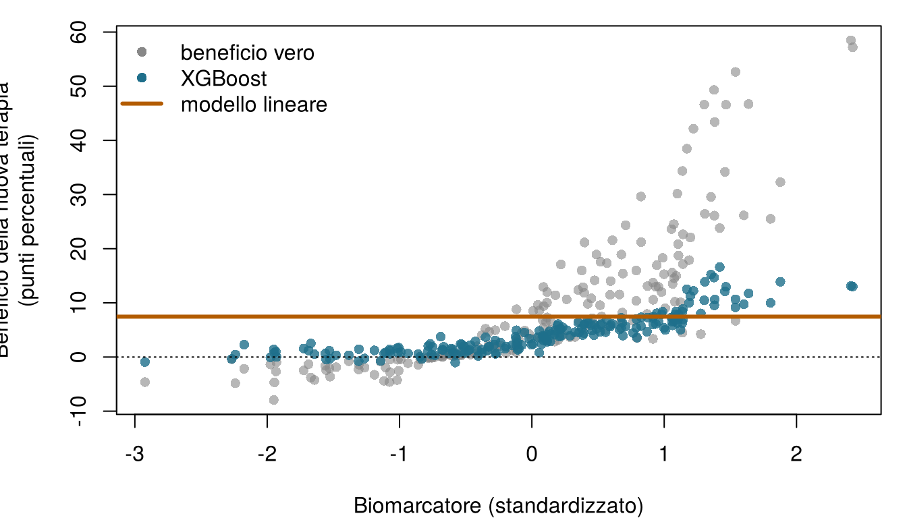
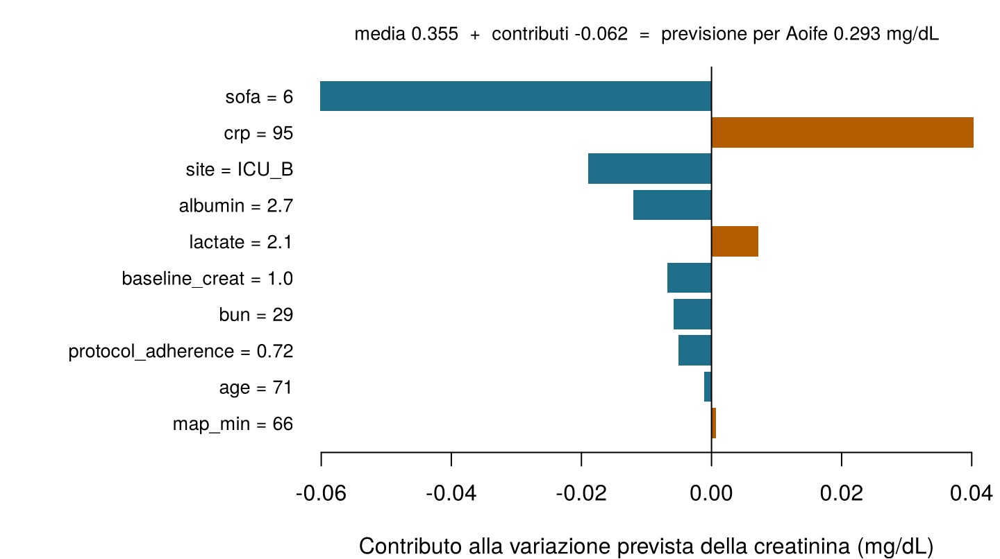

| Esito | Modello | Predittori | MAE di test | R² di test | AUC di test | Brier di test |
|---|---|---|---|---|---|---|
| Variazione della creatinina (mg/dL) | Regressione lineare (OLS), Capitolo 4 | P10 | 0,141 | 0,656 | n/d | n/d |
| Variazione della creatinina (mg/dL) | Foresta casuale (500 alberi), Capitolo 6 | P10 | 0,153 | 0,587 | n/d | n/d |
| AKI | Regressione logistica (non penalizzata), il modello principale, Capitolo 5 | P5 | n/d | n/d | 0,855 | 0,149 |
| AKI | Foresta casuale classificatrice (500 alberi), Capitolo 6 | P5 | n/d | n/d | 0,838 | 0,158 |
12 IA interpretabile e spiegabile
Ogni domanda qui sotto riguarda un modello predittivo. È una domanda sull’intero modello, considerando tutti i pazienti (globale), oppure sulla previsione per un singolo paziente (locale)? Prova a indovinare: il capitolo spiega entrambe le cose.
| Domanda | La tua etichetta |
|---|---|
| Su quali variabili si basa di più la foresta del Reparto 7, considerando tutti i pazienti? | |
| Perché il rischio previsto per Aoife è del 49 %? | |
| In media, come cambia il tempo di follow-up previsto dei pazienti con tumore del polmone all'aumentare del calo ponderale? | |
| Il rischio previsto per Aoife scenderebbe sotto il 25 % se la sua pressione arteriosa fosse più alta? |
Come usare questo capitolo
Inizi da qui?
Questo capitolo spiega modelli costruiti nei capitoli precedenti. In breve:
- Modello e previsione (Definizione 1.3). Un modello \(\hat f\) trasforma le variabili \(\mathbf{x}\) di un paziente in una previsione \(\hat y = \hat f(\mathbf{x})\). Viene stimato su un insieme di addestramento e valutato su un insieme di test che non ha mai visto (Sezione 1.8, Definizione 1.9).
- Coefficienti (Capitolo 4). Un modello lineare prevede \(\hat y = \beta_0 + \beta_1 x_1 + \dots + \beta_p x_p\); \(\beta_j\) è la variazione della previsione quando \(x_j\) aumenta di un’unità e le altre variabili restano fisse. Il lasso riduce alcuni coefficienti esattamente a zero.
- Regressione logistica e odds ratio (Capitolo 5). Il modello logistico è lineare sulla scala dei log-odds; per Aoife fornisce un rischio di danno renale acuto (AKI) del 49 %. Nel Capitolo 1 l’équipe del Reparto 7 ha deciso che vale la pena avviare il bundle ogni volta che il rischio supera 0,25.
- Alberi, foreste casuali e boosting (Capitolo 6). Un albero prevede con una sequenza di domande del tipo se–altrimenti; una foresta fa la media di centinaia di alberi cresciuti su campioni bootstrap; il boosting aggiunge piccoli alberi uno dopo l’altro. Gli ensemble prevedono meglio ma non si possono leggere. L’importanza per impurità riassume quanto ogni variabile abbia aiutato le suddivisioni degli alberi.
- Le reti neurali (Capitolo 7) apprendono strati di variabili e sono i modelli meno leggibili di tutti; i modelli bayesiani (Capitolo 8) forniscono un’intera distribuzione di modelli plausibili invece di uno solo.
- Prevedere non è spiegare le cause (Sezione 1.10). Una variabile può prevedere un esito senza causarlo; nel Reparto 7, la gravità confonde l’effetto apparente dell’aderenza al protocollo.
| Esempio | Chi o che cosa | Esito | Volti che incontrerai |
|---|---|---|---|
| 1 Terapia intensiva del Reparto 7 | 1.250 pazienti di terapia intensiva in 4 ospedali | variazione della creatinina in 48 h (danno renale acuto se ≥ 0,3 mg/dL) | Aoife (71 anni, sepsi, rischio borderline), Tomás (54 anni, rischio basso), Priya (38 anni, rischio alto); la dott.ssa Emma Walsh; Seán, il farmacista |
| 2 Studio ONCO-1 | 1.000 pazienti randomizzati a ricevere o meno la chemioterapia | riduzione del tumore (%) | i pazienti #0042 e #0917 |
| 3 HomeBeat | 500 persone che indossano uno smartwatch a casa | punteggio di stress, evento di peggioramento | Lena |
| 4 CellWorks | 420 lotti di produzione di una terapia cellulare | punteggio di potenza | il lotto CW-118 |
Tutti e quattro i dataset sono simulati e si possono scaricare dall’appendice sui dati. La presentazione completa si trova in Sezione 1.1.
Questo capitolo riguarda la comprensione di ciò che fa un modello stimato. Incontrerai due famiglie di metodi (quelli che leggono la struttura stessa del modello e quelli che lo sondano dall’esterno) e le userai per rispondere a domande globali (su che cosa si basa il modello, e come?) e locali (perché questa previsione, e che cosa la cambierebbe?). Comprende tredici sezioni e un Laboratorio, nove verifiche rapide, tre widget “Prova tu”, una sfida e tre missioni di programmazione in R e Python. Calcola circa due ore. I calcoli più pesanti (foreste, boosting, BART, migliaia di valutazioni di modelli) sono stati fatti in anticipo; i widget e le missioni usano i loro risultati o piccoli modelli che girano nel tuo browser.
La notazione in sintesi (solo per consultazione)
| Simbolo | Significato | Sezione |
|---|---|---|
| \(\hat f\) | un modello stimato, trattato come una funzione che possiamo interrogare | Sezione 12.1 |
| \(\mathcal{L}(\hat f, D)\) | errore di \(\hat f\) sui dati \(D\) (qui l’errore assoluto medio, MAE) | Sezione 12.6 |
| \(D^{(j,m)}\) | i dati con la colonna \(j\) rimescolata per la \(m\)-esima volta, \(m = 1, \dots, N_s\) | Sezione 12.6 |
| \(\text{imp}_j\) | importanza per permutazione della variabile \(j\) | Sezione 12.6 |
| \(\mathbf{x}_S\), \(\mathbf{x}_C\) | le variabili di interesse (insieme \(S\)) e tutte le altre (il suo complementare \(C\)) | Sezione 12.7 |
| \(\hat f_S(\mathbf{x}_S)\) | funzione di dipendenza parziale | Sezione 12.7 |
| \(\hat f^{(i)}_S(\mathbf{x}_S)\) | curva di aspettativa condizionata individuale (ICE) del paziente \(i\) | Sezione 12.7 |
| \(H_{jk}\) | intensità di interazione di Friedman–Popescu tra le variabili \(j\) e \(k\) | 1 |
| \(v(S)\), \(\phi_j\), \(\phi_0\) | valore di una coalizione \(S\), valore di Shapley della variabile \(j\), previsione di riferimento | Sezione 12.9 |
L’elenco completo si trova nella pagina sulla notazione.
12.1 Perché spiegare un modello?
Nei capitoli fin qui abbiamo giudicato i modelli soprattutto in base a quanto bene prevedono. Nella scienza, in medicina e nella regolamentazione, l’accuratezza predittiva da sola non basta. L’output di un modello entra in un’argomentazione (“questo paziente è ad alto rischio perché…”), in una decisione (avviare il bundle oppure no) e in una catena di responsabilità (chi risponde se qualcosa va storto). Il suo comportamento deve quindi essere accompagnato da rappresentazioni che le persone possano esaminare, confrontare e criticare.
Definizione 12.1 (Interpretabilità e spiegabilità) Un modello è interpretabile quando una persona riesce a capire come funziona a partire dalla sua struttura: una breve equazione lineare, un piccolo albero, un punteggio a punti. La spiegabilità riguarda i metodi che costruiscono una descrizione separata e più semplice del comportamento di un modello (una classifica di importanza, una curva, un elenco di contributi per un paziente), di solito per modelli che non sono interpretabili di per sé. Entrambe si valutano in relazione a un pubblico, a un contesto e a uno scopo: non esiste una spiegazione adeguata per tutti (Doshi-Velez e Kim 2017; Lipton 2018; Molnar 2022).
L’interpretabilità è relazionale: non è una proprietà del solo algoritmo. Un modello è interpretabile per qualcuno, per qualcosa. Ciò che conta come spiegazione adeguata nella ricerca metodologica può essere diverso da ciò che serve a Emma al letto del paziente, da ciò che serve al figlio di Aoife per fidarsi dell’équipe o da ciò che serve a un’autorità di regolamentazione per verificare un dispositivo (Figura 12.1).
![Illustrazione di un ponte di pietra con l'etichetta interpretabilità. A sinistra, un modello predittivo: un diagramma di rete, l'equazione y uguale a f di X più epsilon e una superficie tridimensionale complessa con l'etichetta output complesso. A destra, l'interpretazione umana in tre contesti: ricerca scientifica, pratica clinica, politiche e regolamentazione. La trave del ponte riporta contesto, pubblico, obiettivo epistemico, e sotto ci sono tre pannelli: spiegazione, confronto e valutazione. Più in basso, l'alfabetizzazione va da base ad avanzata, e la logica è fatta di contesto e simboli.](images/interpretable_ai.jpg)
È utile vedere una spiegazione come un atto di comunicazione. Ogni spiegazione ha una sorgente (il modello stimato), un messaggio (una qualche rappresentazione del modello) e un ricevente (una persona che la interpreta all’interno del proprio quadro concettuale). Nella teoria della comunicazione di Shannon, nessun messaggio viene trasmesso senza essere codificato e decodificato (Shannon 1948). Un modello codifica la propria conoscenza in una forma che le persone non possono leggere direttamente: centinaia di alberi, migliaia di pesi, una distribuzione a posteriori sulle funzioni. Un metodo di spiegazione ricodifica parte di questa conoscenza per un ricevente umano. Possiamo scriverlo come una trasformazione \(\mathcal{T}\) che prende un modello stimato \(\hat f\) e alcuni dati \(D\) e restituisce una rappresentazione \(\mathcal{R}\):
\[ \mathcal{T}(\hat f, D) \longmapsto \mathcal{R}. \qquad(12.1)\]
La rappresentazione \(\mathcal{R}\) può essere un elenco di numeri (punteggi di importanza), una curva (dipendenza parziale), una matrice (intensità di interazione) o un insieme di contributi per un paziente (valori di Shapley). Non riproduce mai l’intero modello; ne conserva alcuni aspetti e ne scarta altri. Due conseguenze attraversano tutto il capitolo. Primo, ogni spiegazione è una semplificazione e può trarre in inganno se la parte scartata era proprio quella che contava. Secondo, l’Equazione 12.1 dipende da \(D\): lo stesso modello, spiegato con dati diversi, può raccontare una storia diversa.
Questa prospettiva ha una lunga storia nella scienza. I modelli non sono solo strumenti di previsione, ma anche quadri di rappresentazione: una regressione lineare esprime relazioni attraverso coefficienti, sotto ipotesi esplicite; una regressione logistica attraverso i log-odds; un albero attraverso una partizione ricorsiva dei pazienti. I modelli statistici classici venivano scelti anche perché i loro parametri avevano un significato diretto. Quando l’apprendimento automatico è passato a foreste, boosting e reti neurali, l’accuratezza è migliorata e quel significato diretto si è perso, così l’interpretazione ha avuto bisogno di metodi propri. Questi metodi si capiscono meglio come operazioni di meta-modellazione: prendono un modello stimato e restituiscono una sintesi strutturata del suo comportamento, ispezionandone la struttura o perturbandone gli input in modo controllato, di solito sotto forma di una figura pensata per essere esaminata e confrontata (Molnar 2022). Progettarli comporta sempre compromessi tra fedeltà al modello stimato, robustezza al rumore campionario, costo computazionale e chiarezza per il pubblico a cui sono destinati.
Perché darsi questa pena? In sanità le spiegazioni servono a quattro scopi: il debugging (un modello che si basa sull’identificativo di un ospedale, o su una variabile registrata dopo l’esito, può essere scoperto: i controlli del “troppo bello per essere vero?” del Capitolo 6); la comprensione scientifica (quali fattori biologici o clinici portano il segnale?); la fiducia e la contestabilità (un paziente, un clinico o un tribunale possono mettere in discussione una raccomandazione); e la regolamentazione, che in Europa ora chiede esplicitamente output che gli utenti possano interpretare e una sorveglianza umana dei sistemi ad alto rischio. La Sezione 12.2 esamina ciascuno di questi usi, a cominciare dalla legge.
C’è anche un argomento forte contro l’affidarsi alle spiegazioni a posteriori. Quando la posta in gioco è alta, sostiene Rudin (2019), dovremmo preferire modelli interpretabili per costruzione (punteggi brevi, modelli lineari sparsi, piccoli alberi) ogni volta che prevedono più o meno altrettanto bene, invece di costruire una scatola nera e poi spiegarla con un secondo modello approssimato. Tieni a mente questo argomento: nel Reparto 7 i modelli leggibili sono accurati almeno quanto le foreste (Tabella 12.1). Per la variazione della creatinina, la regressione lineare (OLS) del Capitolo 4 ha ancora il MAE di test più basso dei due, 0,141 mg/dL contro 0,153 della foresta casuale del Capitolo 6; per l’AKI, il modello logistico del Capitolo 5 ha un’AUC leggermente più alta della foresta di classificazione. Entrambi si possono leggere direttamente.
La stessa foresta del Reparto 7 viene spiegata a tre pubblici: una data scientist, Emma e il figlio di Aoife. Quale affermazione corrisponde all’idea che l’interpretabilità sia relazionale?
12.2 Perché le spiegazioni contano: la regolamentazione e altri usi
Guarda di nuovo la Figura 12.1. Sulla sponda destra ci sono tre contesti (la ricerca scientifica, la pratica clinica, le politiche pubbliche e la regolamentazione), e ciascuno manda una richiesta diversa attraverso il ponte. Un regolatore vuole prove che un dispositivo sia sicuro e che i suoi utenti possano sorvegliarlo; un clinico vuole sapere se il numero di stanotte ha senso per questo paziente; uno scienziato vuole sapere che cosa il modello ha imparato sulla malattia. Cominciamo dalla legge, perché in Europa la legge ora dice qualcosa di esplicito sulle spiegazioni, e poi passiamo agli altri usi.
12.2.1 Che cosa chiede la legge
Il Regolamento sull’IA. Un software che fornisce informazioni usate per prendere decisioni diagnostiche o terapeutiche è un dispositivo medico almeno di classe IIa secondo la regola di classificazione 11 del Regolamento sui dispositivi medici (MDR), e perciò richiede la valutazione di un organismo notificato (European Parliament and Council of the European Union 2017, Annex VIII, Rule 11). Il Regolamento sull’IA classifica come ad alto rischio qualsiasi sistema di IA che sia un prodotto, o un componente di sicurezza di un prodotto, disciplinato dalle normative elencate nel suo allegato I (tra cui l’MDR e il regolamento sui dispositivi medico-diagnostici in vitro) quando quel prodotto richiede una valutazione da parte di terzi (European Parliament and Council of the European Union 2024, Article 6(1) and Annex I). La maggior parte dei modelli di previsione clinica immessi sul mercato, compreso un punteggio di rischio di AKI come quello sullo schermo di Aoife, è quindi un sistema di IA ad alto rischio (il Capitolo 18 ripercorre la classificazione). Tre articoli del Regolamento riguardano direttamente le spiegazioni.
- Articolo 13, trasparenza e fornitura di informazioni ai deployer. Un sistema ad alto rischio deve essere progettato in modo che il suo funzionamento sia “sufficientemente trasparente da consentire ai deployer di interpretare l’output del sistema e utilizzarlo adeguatamente”. Le sue istruzioni per l’uso devono indicarne capacità e limiti e, se del caso, le caratteristiche tecniche che consentono di “fornire informazioni pertinenti per spiegarne l’output” (European Parliament and Council of the European Union 2024, Article 13(1) and 13(3)(b)(iv)). Il deployer è l’ospedale; chi interpreta sono Emma e Seán.
- Articolo 14, sorveglianza umana. Le persone che sorvegliano il sistema devono poterne comprendere capacità e limiti, restare consapevoli della tendenza a fare eccessivo affidamento sul suo output (la distorsione dell’automazione), interpretare correttamente l’output, tenendo conto degli strumenti e dei metodi di interpretazione disponibili, e decidere di ignorarlo, ribaltarlo o interrompere il sistema (European Parliament and Council of the European Union 2024, Article 14(4)). I metodi di spiegazione compaiono come un aiuto alla sorveglianza, non come un suo sostituto.
- Articolo 86, diritto alla spiegazione dei singoli processi decisionali. Una persona interessata da una decisione che il deployer ha preso sulla base dell’output di un sistema ad alto rischio, e che produce effetti giuridici o incide in modo analogamente significativo su di lei, con un impatto che ritiene negativo sulla sua salute, sulla sua sicurezza o sui suoi diritti fondamentali, ha il diritto di ottenere dal deployer “spiegazioni chiare e significative sul ruolo del sistema di IA nella procedura decisionale e sui principali elementi della decisione adottata” (European Parliament and Council of the European Union 2024, Article 86(1)). Leggi con attenzione l’ambito: l’articolo riguarda gli usi ad alto rischio elencati nell’allegato III (per esempio i sistemi che decidono l’ammissibilità ai servizi sanitari pubblici o fanno il triage dei pazienti in emergenza), e non i dispositivi medici che sono ad alto rischio tramite l’allegato I. La domanda del figlio di Aoife è legittima, ma a rispondere sono la buona pratica clinica e le informazioni richieste dagli articoli 13 e 14, non l’articolo 86.
Nessuno di questi articoli indica un metodo. Il Regolamento chiede un risultato, output che gli utenti possano interpretare e sorvegliare, e lascia i mezzi al fornitore. I suoi obblighi si applicano per gradi (European Parliament and Council of the European Union 2024, Article 113).
Protezione dei dati. Il GDPR riconosce a ciascuno il diritto “di non essere sottoposto a una decisione basata unicamente sul trattamento automatizzato, compresa la profilazione”, che produca effetti giuridici o incida in modo analogo significativamente sulla persona; quando queste decisioni sono ammesse, le garanzie comprendono almeno il diritto di ottenere l’intervento umano, di esprimere la propria opinione e di contestare la decisione (European Parliament and Council of the European Union 2016, Article 22(1) and 22(3)). Il considerando 71 aggiunge il diritto “di ottenere una spiegazione della decisione conseguita dopo tale valutazione”, e gli articoli da 13 a 15 richiedono “informazioni significative sulla logica utilizzata”. I considerando non sono vincolanti di per sé, e i giuristi non concordano su quanto queste disposizioni equivalgano a un diritto alla spiegazione di una singola decisione (Wachter, Mittelstadt, e Floridi 2017). Un punteggio di rischio che Emma legge e soppesa non è una decisione basata “unicamente” su un trattamento automatizzato: un motivo in più perché l’essere umano nel ciclo sia reale.
Dispositivi medici. L’MDR non menziona la spiegabilità in quanto tale, ma arriva allo stesso punto per altre vie. Il fabbricante deve dimostrare che il dispositivo soddisfa i requisiti generali di sicurezza e prestazione, compresi quelli per il software (allegato I, sezione 17), attraverso una valutazione clinica (articolo 61 e allegato XIV); descriverne progettazione, destinazione d’uso, prestazioni e rischi nella documentazione tecnica (allegato II); e fornire agli utenti informazioni su destinazione d’uso, prestazioni e limiti (allegato I, sezione 23) (European Parliament and Council of the European Union 2017). Un organismo notificato che esamini una foresta per l’AKI vorrà sapere su che cosa si basa, se ciò è clinicamente plausibile e in quali pazienti sbaglia: le domande di questo capitolo.
Linee guida internazionali. La Food and Drug Administration statunitense, Health Canada e la MHRA del Regno Unito hanno pubblicato nel 2021 dieci principi di Good Machine Learning Practice per lo sviluppo dei dispositivi medici; due di essi dicono che l’attenzione va posta sulle prestazioni del gruppo uomo–IA e che agli utenti vanno fornite informazioni chiare ed essenziali (U.S. Food and Drug Administration, Health Canada, e Medicines and Healthcare products Regulatory Agency 2021). I loro principi del 2024 sulla trasparenza la definiscono come il grado in cui le informazioni appropriate su un dispositivo (destinazione d’uso, sviluppo, prestazioni e, quando disponibile, la sua logica) vengono comunicate con chiarezza ai pubblici pertinenti, e trattano la spiegabilità come il grado in cui quella logica può essere spiegata a una persona (U.S. Food and Drug Administration, Health Canada, e Medicines and Healthcare products Regulatory Agency 2024). Per i medicinali, il documento di riflessione dell’Agenzia europea per i medicinali (EMA) sull’IA nel ciclo di vita dei medicinali (2024) preferisce i modelli trasparenti; accetta modelli a scatola nera quando gli sviluppatori dimostrano che quelli trasparenti hanno prestazioni o robustezza insoddisfacenti, ma in quel caso si aspetta una motivazione documentata, l’uso di metodi di spiegabilità ogni volta che è possibile e la discussione di queste applicazioni con l’agenzia, tramite qualificazione o consulenza scientifica (European Medicines Agency 2024).
12.2.2 Altri usi delle spiegazioni
- Adozione clinica e fiducia. Ai clinici si chiede di agire sull’output di un modello e di rispondere della decisione. Una spiegazione che permette loro di confrontare l’output con ciò che sanno del paziente (il SOFA di Aoife inferiore alla media, per esempio: vedi la Sezione 12.9) sostiene la fiducia dove è meritata; una spiegazione che sembra soltanto plausibile può dare false rassicurazioni (Ghassemi, Oakden-Rayner, e Beam 2021).
- Debugging, leakage e scorciatoie. L’uso più pratico di tutti. Nel Capitolo 3 i geni 08, 14 e 19 di ONCO-1 si sono rivelati copie dell’esito; la foresta del Capitolo 6 li ha messi in cima alla sua classifica di importanza (Sezione 12.6), ed è così che ci si accorge di una fuga di informazione del genere. I modelli per immagini fanno lo stesso con le scorciatoie: reti addestrate su radiografie del torace hanno imparato i marcatori dell’ospedale o il modo in cui l’immagine era stata acquisita invece dei polmoni, e i metodi di spiegazione hanno aiutato a rivelarlo (Zech et al. 2018; DeGrave, Janizek, e Lee 2021; Geirhos et al. 2020).
- Verifiche di equità. Le spiegazioni aiutano a chiedersi perché un modello funziona in modo diverso tra gruppi. Un algoritmo molto usato negli Stati Uniti prevedeva i costi sanitari come indicatore dei bisogni di salute; poiché per i pazienti neri con gli stessi bisogni si spendeva meno, sottostimava sistematicamente quanto fossero malati (Obermeyer et al. 2019). Verificare su che cosa si basa un modello (qui, la scelta stessa dell’esito) fa parte di ogni verifica di equità.
- Scoperta scientifica. Le misure di interazione e le curve ICE possono indicare effetti che vale la pena verificare, come il beneficio di una terapia che cresce con un biomarcatore nella
- Generano ipotesi; confermarle richiede studi disegnati allo scopo (Capitolo 13).
- Sviluppo e produzione dei farmaci. I modelli oggi selezionano composti, scelgono i pazienti per gli studi e monitorano la produzione. Secondo le norme di buona fabbricazione (GMP) ogni decisione di rilascio deve essere giustificata e documentata. Se CellWorks usasse un modello per segnalare lotti come CW-118 prima del rilascio, il gruppo qualità dovrebbe vedere quali misure del processo hanno determinato la segnalazione, verificare che abbiano senso e registrarlo. La bozza di allegato 22 delle GMP dell’UE sull’intelligenza artificiale, pubblicata dalla Commissione europea (2025), propone proprio questo per le applicazioni critiche: registrare quali variabili hanno contribuito a ciascuna classificazione durante i test, registrare la confidenza del modello e far valutare a esperti se il modello si basa sulle variabili appropriate (European Commission 2025).
- Scienza regolatoria. Anche le autorità regolatorie e gli uffici di registrazione usano modelli interpretabili. Nella valutazione del rischio dei prodotti fitosanitari, l’apprendimento automatico interpretabile applicato a un database ampliato di studi di assorbimento cutaneo umano in vitro ha individuato i principali predittori dell’assorbimento e ha orientato i valori predefiniti usati quando non è disponibile uno studio (D. Sarti et al. 2025). Gli uffici di registrazione delle varietà vegetali hanno usato foreste casuali e modelli bayesiani additivi per mostrare ai richiedenti quali effetti genotipo per ambiente determinano resa e qualità nelle prove ufficiali (D. A. Sarti et al. 2025).
| Pubblico | Domanda tipica | Spiegazione utile | In questo capitolo |
|---|---|---|---|
| Paziente o familiare (il figlio di Aoife) | Perché questo numero per me, e che cosa succede adesso? | Una spiegazione locale in linguaggio semplice e il piano di cura | I contributi di Aoife ai suoi log-odds (Sezione 12.9) |
| Clinico (Emma) | Questo output ha senso per questo paziente? Quando dovrei ignorarlo? | Contributi locali confrontati con la cartella clinica; limiti noti | Valori di Shapley; l’analisi “e se” e le sue cautele (Sezione 12.10) |
| Sviluppatore o revisore (Seán, il comitato di governance dell’IA) | Su che cosa si basa il modello? C’è qualche fuga di informazione? È stabile? | Importanza globale su dati tenuti da parte, PDP e ICE, interazioni, incertezza | Importanza per permutazione, la fuga di informazione di ONCO-1, VIVID, VSUP |
| Regolatore od organismo notificato | È sicuro ed efficace per la sua destinazione d’uso, e gli utenti possono sorvegliarlo? | Destinazione d’uso, dati, prestazioni per sottogruppo, limiti e progettazione per la sorveglianza, documentati | La lista di controllo della Sezione 12.12 |
| Scienziato | Che cosa ha imparato il modello sulla malattia o sul processo? | Interazioni e forme degli effetti con la loro incertezza, lette come ipotesi | Terapia × biomarcatore (Figura 12.6); BART e bartMan (Sezione 12.11) |
Un ospedale acquista uno strumento di IA con marcatura CE, di classe IIa, che ordina i pazienti di terapia intensiva in base al rischio di AKI. Quale affermazione sul Regolamento sull’IA è corretta?
12.3 Una mappa dei metodi
I metodi di spiegazione vengono di solito ordinati lungo tre assi. Il primo, che la prima edizione di questo libro usava per organizzare l’intero capitolo, è che cosa esamina il metodo (Figura 12.2).

Definizione 12.2 (Specifici e agnostici rispetto al modello; globali e locali; intrinseci e post hoc) Un metodo specifico del modello (dipendente dal modello, o incorporato) usa la struttura interna di un tipo di modello: i coefficienti di un modello lineare, le suddivisioni di un albero, i conteggi delle suddivisioni di una foresta: ne esamina le componenti strutturali. Un metodo agnostico rispetto al modello ha bisogno solo della possibilità di interrogare il modello (fornirgli input, leggerne le previsioni), e quindi funziona con qualsiasi modello: ne esamina il comportamento funzionale. Una spiegazione globale descrive il comportamento del modello su un’intera popolazione; una spiegazione locale descrive una previsione per un singolo individuo. Una spiegazione intrinseca viene da un modello interpretabile per costruzione (un’equazione lineare breve, un piccolo albero, un punteggio a punti), così che il modello è la propria spiegazione; una spiegazione post hoc viene costruita dopo la stima, come descrizione separata di un modello che non si può leggere direttamente (Molnar 2022; Lipton 2018).
I metodi specifici sono veloci e fedeli, perché leggono il modello stesso, ma ciascuno funziona solo per la propria classe di modelli. I metodi agnostici permettono di confrontare modelli molto diversi con gli stessi strumenti, al prezzo di molte valutazioni del modello e di una dipendenza dai dati usati per sondarlo, soprattutto quando le variabili sono correlate (Hooker, Mentch, e Zhou 2021).
I tre assi sono indipendenti. L’importanza per impurità è specifica del modello, post hoc e globale; i valori di Shapley sono agnostici rispetto al modello, post hoc e locali; i coefficienti del modello logistico del Capitolo 5 sono specifici del modello e intrinseci, e danno sia una spiegazione globale sia (Sezione 12.9) una locale. Anche le rappresentazioni che producono hanno forme diverse: numeri (punteggi di importanza), oggetti strutturati (una matrice di interazioni), funzioni (curve di dipendenza parziale) o oggetti geometrici (una rete di interazioni, un albero disegnato come diagramma). La Tabella 12.3 colloca sulla mappa i metodi di questo capitolo.
| Metodo | Specifico o agnostico | Intrinseco o post hoc | Globale o locale | Domanda a cui risponde | Sezione |
|---|---|---|---|---|---|
| Coefficienti, odds ratio | specifico (lineare, logistico) | intrinseco | entrambi | Di quanto cambia la previsione per unità di ciascuna variabile? | Sezione 12.5 |
| Regole dell’albero | specifico (albero singolo) | intrinseco | entrambi | Quali domande portano a questa previsione? | Sezione 12.5 |
| Importanza per impurità, gain | specifico (ensemble di alberi) | post hoc | globale | Su quali variabili gli alberi hanno fatto le suddivisioni più utili? | Sezione 12.5 |
| Importanza per permutazione | agnostico | post hoc | globale | Quanto peggiora il modello senza l’informazione di questa variabile? | Sezione 12.6 |
| Dipendenza parziale (PDP) | agnostico | post hoc | globale | Come cambia la previsione media al variare di una variabile? | Sezione 12.7 |
| Curve ICE | agnostico | post hoc | locale (una curva per paziente) | L’effetto è diverso da un paziente all’altro? | Sezione 12.7 |
Statistica H, VIVID (pacchetto vivid) |
agnostico | post hoc | globale | Quali variabili agiscono insieme anziché in modo additivo? | 1 |
| Valori di Shapley | agnostico | post hoc | locale (e globale, se mediato) | Quanto ha spostato ciascuna variabile questa previsione rispetto alla media? | Sezione 12.9 |
| Spiegazione controfattuale | agnostico | post hoc | locale | Qual è il cambiamento più piccolo che modificherebbe la previsione? | Sezione 12.10 |
Proporzioni di inclusione di BART (pacchetto bartMan) |
specifico (BART) | post hoc | globale | Quanto spesso gli alberi a posteriori si dividono su ciascuna variabile, o su due variabili lungo uno stesso ramo? | Sezione 12.11 |
| Palette di incertezza che sopprime i valori (VSUP) | visualizzazione di uno qualsiasi dei precedenti | n/d | globale | Quali parti di una spiegazione sono insieme grandi e affidabili? | Sezione 12.11 |
12.4 Un ambulatorio per il tumore del polmone, e un avvertimento sul tempo
Per confrontare molti modelli con gli stessi strumenti ci serve un dataset piccolo. Oltre al Reparto 7, ne usiamo uno di un ambulatorio oncologico di follow-up. È simulato (non descrive nessun paziente reale), ispirato a un noto dataset di pazienti con tumore del polmone in stadio avanzato (Loprinzi et al. 1994), e abbastanza piccolo da consentire migliaia di valutazioni di modelli: 228 pazienti, cinque predittori e un esito (vedi l’appendice sui dati).
age(età, in anni) esex(sesso);ph.ecog: il performance status ECOG valutato dal medico, da 0 (pienamente attivo) a 3 (a letto o in poltrona per più di metà della giornata) (Oken et al. 1982);ph.karno: il punteggio di Karnofsky, un’altra misura della stessa cosa valutata dal medico, su una scala da 0 a 100, dove 100 è l’attività normale (Karnofsky e Burchenal 1949);wt.loss: il peso perso nei sei mesi precedenti (kg);time: i giorni di follow-up, estatus: se il paziente era deceduto (dead) o era ancora in vita (alive) alla fine del follow-up.
| patient_id | age | sex | ph.ecog | ph.karno | wt.loss | time | status |
|---|---|---|---|---|---|---|---|
| 1 | 68 | female | 3 | 46 | 11.3 | 30 | alive |
| 2 | 53 | female | 2 | 68 | 11.6 | 30 | dead |
| 3 | 64 | female | 1 | 80 | 6.3 | 133 | alive |
| 4 | 62 | female | 1 | 100 | 15.1 | 171 | alive |
| 5 | 57 | male | 1 | 80 | 24.3 | 30 | dead |
| 6 | 40 | female | 1 | 86 | 4.6 | 192 | alive |
Seguendo la prima edizione di questo libro, prevediamo time a partire dai cinque predittori con i modelli della Parte II, stimati su 171 pazienti di addestramento e testati sugli altri 57 (Tabella 12.5).
| Modello | RMSE di test (giorni) | MAE di test (giorni) |
|---|---|---|
| Media (nessun modello) | 117.81 | 102.90 |
| Regressione lineare | 52.65 | 43.68 |
| Lasso | 53.30 | 45.01 |
| Albero (profondità 4, scelta con VC) | 45.37 | 33.22 |
| Foresta casuale | 39.67 | 30.76 |
| XGBoost | 40.92 | 32.41 |
| Rete neurale (2 strati nascosti) | 43.34 | 32.71 |
I modelli flessibili (la foresta, il boosting, la rete e persino un albero singolo) battono nettamente i modelli lineari (MAE di test di circa 31 giorni per la foresta contro 44 per la regressione lineare). La ragione si vede nei dati: nessun paziente ha un time inferiore a 30 giorni (68 pazienti hanno esattamente 30), quindi la relazione ha un pavimento che nessuna retta può seguire. Per fidarci di qualunque spiegazione di questi modelli, però, dobbiamo prima essere onesti su che cosa sia time.
time non è il tempo di sopravvivenza
Dei 228 pazienti, 135 (59 %) erano in vita alla fine del follow-up. Per loro, time dice soltanto che sono sopravvissuti almeno così a lungo: il loro tempo di sopravvivenza è censurato. Trattare time come un normale numero da prevedere, come facciamo qui, conta un paziente visto vivo l’ultima volta al giorno 192 esattamente come un paziente morto al giorno 192, e quindi sottostima la sopravvivenza, soprattutto nei pazienti in buone condizioni, che sono i più esposti alla censura. Ciò che i modelli che seguono prevedono è quindi il numero di giorni di follow-up registrato, non la sopravvivenza.
Manteniamo questa semplificazione perché il dataset è piccolo e completo e ci permette di confrontare molti modelli con gli stessi strumenti di spiegazione, che è lo scopo di questo capitolo. Per una vera prognosi useresti metodi pensati per esiti censurati, come il modello di Cox (Cox 1972) o le foreste casuali di sopravvivenza (Ishwaran et al. 2008), e i metodi di spiegazione di questo capitolo si applicano a essi allo stesso modo. Una buona spiegazione di un modello dell’esito sbagliato resta una spiegazione dell’esito sbagliato.
Nell’ambulatorio per il tumore del polmone, l’importanza per permutazione (più avanti) dice che la foresta si basa molto sul performance status ECOG. Sapendo che time è censurato per la maggior parte dei pazienti, che cosa puoi concludere con sicurezza?
12.5 Leggere il modello stesso
12.5.1 Coefficienti
L’interpretazione specifica del modello è più trasparente nei modelli lineari, in cui l’intera struttura stimata è un elenco di coefficienti. La Tabella 12.6 mostra la regressione lineare di time sui cinque predittori nell’ambulatorio per il tumore del polmone, con ogni coefficiente espresso anche per deviazione standard della sua variabile, così da poter confrontare variabili misurate in unità diverse.
| Variabile | Coefficiente | ES | Per DS | Senza Karnofsky | |
|---|---|---|---|---|---|
| age | Età (per anno) | -0,22 | 0,42 | -2,0 | -0,21 |
| male | Sesso maschile | -9,46 | 7,80 | -4,7 | -11,67 |
| ph.ecog | ECOG (per livello) | -72,17 | 9,54 | -67,1 | -100,37 |
| ph.karno | Karnofsky (per punto) | 1,71 | 0,52 | 28,8 | n/d |
| wt.loss | Calo ponderale (per kg) | -7,68 | 0,79 | -38,8 | -7,37 |
Un performance status peggiore (ECOG più alto) e un calo ponderale maggiore si accompagnano a un follow-up più breve; un punteggio di Karnofsky migliore si accompagna a un follow-up più lungo; età e sesso aggiungono poco. Fin qui, tutto leggibile. Ma guarda la colonna di destra: quando si toglie il punteggio di Karnofsky, il coefficiente dell’ECOG passa da -72,2 a -100,4 giorni per livello. Il motivo è che ECOG e Karnofsky misurano quasi la stessa cosa (la loro correlazione è -0,89). Con entrambi nel modello, ciascun coefficiente risponde a una domanda strana (e se l’ECOG peggiorasse mentre il punteggio di Karnofsky resta uguale?) su una combinazione di valori che quasi non esiste. Un coefficiente si interpreta sempre a parità delle altre variabili, e il suo significato cambia quando cambiano le altre variabili. I modelli penalizzati rendono visibile l’instabilità: il lasso del Capitolo 4 può tenere una di due variabili correlate e scartare l’altra, quasi per caso.
Nel Reparto 7, il modello logistico del Capitolo 5 è quello che Emma usa già. I suoi odds ratio (1,50 per punto di SOFA (Vincent et al. 1996), 1,35 per mmol/L di lattato, 0,96 per mmHg della pressione arteriosa media minima, PAM) sono una descrizione completa e globale del modello. Vedremo nella Sezione 12.9 che, per un modello lineare o logistico, forniscono anche una spiegazione locale esatta del rischio di Aoife, senza costi aggiuntivi.
12.5.2 Regole dell’albero
Un albero singolo è la propria spiegazione: una sequenza di regole se–altrimenti che si può seguire con il dito (Figura 12.3).

La prima suddivisione è sul performance status ECOG, e le successive affinano la previsione di nuovo con l’ECOG e con il calo ponderale. Il punteggio di Karnofsky non compare affatto, non perché non conti, ma perché l’ECOG porta già quasi la stessa informazione. Le variabili che compaiono presto spesso contano molto per l’albero, ma la posizione di una suddivisione non è una misura di importanza: una variabile che non compare mai alla radice può comunque essere usata in molte suddivisioni più in basso, e una variabile correlata può prendere il posto di un’altra se i dati cambiano di poco (l’instabilità del Capitolo 6).
12.5.3 L’importanza incorporata degli ensemble
Foreste e modelli di boosting non si possono leggere, ma conservano una traccia della propria costruzione. L’importanza per impurità di una foresta somma, su tutti gli alberi, quanto le suddivisioni su ciascuna variabile abbiano ridotto l’errore; XGBoost (Chen e Guestrin 2016) riporta la stessa idea come gain. Nel Reparto 7 (Tabella 12.7) entrambe mettono al primo posto il SOFA e al secondo l’azoto ureico ematico (BUN).
| Variabile | Foresta: importanza per impurità | XGBoost: quota del gain |
|---|---|---|
| sofa | 0.2562 | 0.3400 |
| bun | 0.1381 | 0.1041 |
| baseline_creat | 0.1106 | 0.0924 |
| map_min | 0.1014 | 0.0678 |
| protocol_adherence | 0.0913 | 0.0551 |
| crp | 0.0847 | 0.0608 |
| albumin | 0.0809 | 0.0575 |
| lactate | 0.0583 | 0.0436 |
Queste importanze incorporate sono rapide e utili per una prima selezione, ma hanno tre debolezze note. Sono calcolate sui dati di addestramento, quindi premiano le variabili che il modello ha usato per adattarsi al rumore; favoriscono le variabili con molti possibili punti di suddivisione (le variabili continue rispetto a quelle binarie) (Strobl et al. 2007); e non dicono nulla sulla direzione: un valore grande non ti dice se un aumento della variabile alza o abbassa la previsione. Tieni d’occhio il BUN: vedremo che la sua posizione elevata è in gran parte presa in prestito dalle variabili con cui è correlato.
Nell’ambulatorio per il tumore del polmone, togliere il punteggio di Karnofsky dal modello lineare cambia molto il coefficiente del performance status ECOG. Qual è la spiegazione migliore?
12.6 Importanza per permutazione
Passiamo ora ai metodi agnostici rispetto al modello, che lo trattano come una scatola nera. Il primo è l’idea più semplice del capitolo: se il modello si basa su una variabile, rimescolarla dovrebbe peggiorarne le previsioni. Rimescolare una colonna (scambiarne a caso i valori tra i pazienti) conserva la distribuzione della variabile ma rompe il suo legame con l’esito e con le altre variabili. L’idea risale alle foreste casuali di Breiman (2001) ed è stata estesa a qualsiasi modello da Fisher, Rudin, e Dominici (2019).
Definizione 12.3 (Importanza per permutazione) Sia \(\mathcal{L}(\hat f, D)\) l’errore di un modello stimato \(\hat f\) su un dataset \(D\) (per esempio l’errore assoluto medio sull’insieme di test), e sia \(D^{(j,m)}\) una copia di \(D\) in cui la colonna della variabile \(j\) è stata rimescolata a caso, per la \(m\)-esima di \(N_s\) volte. L’importanza per permutazione della variabile \(j\) è l’aumento medio dell’errore:
\[ \text{imp}_j = \frac{1}{N_s} \sum_{m=1}^{N_s} \mathcal{L}\big(\hat f, D^{(j,m)}\big) - \mathcal{L}\big(\hat f, D\big). \qquad(12.2)\]
Un valore positivo grande significa che il modello si basa sulla variabile \(j\); un valore vicino a zero significa che non lo fa. Per una metrica in cui più alto è meglio (accuratezza, AUC), l’ordine dei due termini si inverte, così che l’importanza sia di nuovo metrica originale meno metrica dopo il rimescolamento.
Nota l’ordine nell’Equazione 12.2: rimescolato meno originale. Per un errore, rimescolare peggiora le cose, quindi l’errore sale e l’importanza è positiva. Un piccolo valore negativo capita per caso quando una variabile è inutile (un rimescolamento fortunato può fare un po’ meglio dell’originale); significa “nessuna prova che il modello si basi su questa variabile”, non “dannosa”. Poiché ogni rimescolamento è casuale, lo ripetiamo \(N_s\) volte e guardiamo la dispersione oltre alla media.
Rimescola tu una variabile. Qui sotto ci sono i 250 pazienti di test del Reparto 7 e due modelli dei capitoli precedenti, entrambi per la variazione della creatinina in 48 ore a partire dagli stessi dieci predittori: la foresta casuale del Capitolo 6 (MAE di test 0,153 mg/dL) e la regressione lineare (OLS) del Capitolo 4 (0,141 mg/dL). Scegli una variabile e premi Rimescola una volta: la sua colonna viene rimescolata e il MAE di test del modello viene ricalcolato. Ogni punto è un rimescolamento; la barra è l’aumento medio sui rimescolamenti fatti finora. (I 30 rimescolamenti di ogni variabile sono stati calcolati in anticipo con scripts/precompute/ch12_explain.py; il pulsante li mostra uno alla volta.) Obiettivo: rimescolare almeno quattro variabili diverse, poi confrontare i due modelli.
Spiccano due cose. Primo, il SOFA domina in entrambi i modelli, seguito dalla creatinina di base e dalla PAM minima: la stessa fisiologia vista attraverso due modelli molto diversi. Secondo, cerca il BUN: l’importanza per impurità della foresta lo metteva al secondo posto (Tabella 12.7), ma quando viene rimescolato sull’insieme di test l’errore della foresta sale molto meno che per il SOFA, e meno che per la creatinina di base o la PAM, e il modello lineare quasi non se ne accorge. Il BUN è correlato con il SOFA (r = 0,53) e con la creatinina di base (r = 0,36); gli alberi lo usano spesso per le suddivisioni come sostituto di queste variabili, il che gli fa guadagnare merito di impurità durante l’addestramento, ma la sua informazione è quasi tutta disponibile altrove. L’importanza per permutazione su dati nuovi è la misura più onesta di ciò di cui il modello ha bisogno.
L’importanza per permutazione può anche scoprire un leakage. Quando la foresta del Capitolo 6 è stata addestrata su tutte le variabili di ONCO-1, le sue tre variabili più importanti erano i geni 08, 19 e 14, i geni che, per costruzione, sono copie dell’esito (Tabella 12.8). Una spiegazione che mette in cima una variabile poco plausibile è spesso il primo segnale che qualcosa non va nei dati, non che si sia fatta una scoperta.
| Variabile | Importanza per impurità |
|---|---|
| gene_08 | 0.2163 |
| gene_19 | 0.2141 |
| gene_14 | 0.1822 |
| dose_intensity | 0.1171 |
| treatment_no_chemo | 0.0969 |
Nell’ambulatorio per il tumore del polmone i tre modelli concordano a grandi linee (Tabella 12.9): prima l’ECOG, poi il punteggio di Karnofsky e il calo ponderale (in un ordine che cambia da un modello all’altro), con età e sesso trascurabili.
| Variabile | Regressione lineare | Foresta casuale | XGBoost |
|---|---|---|---|
| Età | 0,2 (0,2) | -0,1 (0,5) | -1,2 (0,6) |
| Sesso maschile | 0,1 (0,7) | 0,1 (0,4) | 0,1 (0,4) |
| ECOG | 39,5 (5,9) | 41,4 (5,2) | 45,7 (5,8) |
| Karnofsky | 13,5 (3,1) | 26,0 (4,2) | 17,2 (3,3) |
| Calo ponderale | 19,3 (4,3) | 21,7 (3,4) | 23,1 (3,9) |
L’importanza per permutazione è facile da calcolare e da spiegare, ma ha delle insidie che contano nei dati clinici.
- Le variabili correlate si dividono il merito, o lo perdono. Rimescolare l’ECOG lasciando intatto il punteggio di Karnofsky crea pazienti “pienamente attivi” secondo un punteggio e “disabili” secondo l’altro. Al modello vengono quindi chieste combinazioni che non ha mai visto, e il suo comportamento lì è arbitrario (Hooker, Mentch, e Zhou 2021). Inoltre, se il modello può ricavare l’informazione dell’ECOG dal Karnofsky, l’importanza di ciascuno può sembrare minore di quella della coppia. Rimescola le variabili correlate insieme (come abbiamo fatto con i quattro ospedali del Reparto 7, rimescolati come un’unica variabile) oppure riportale come gruppo.
- Misura quanto il modello dipende dalla variabile, non il valore della variabile nella realtà. Una variabile che un modello ignora può essere essenziale per un modello altrettanto accurato che la usa al posto di una variabile correlata. Fisher, Rudin, e Dominici (2019) propongono di guardare l’intero insieme dei buoni modelli (il Rashomon set) e di riportare l’intervallo di importanza tra di essi.
- Dati di test, non di addestramento. Calcolata sull’insieme di addestramento, l’importanza per permutazione premia le variabili che il modello ha usato per memorizzare il rumore, proprio come l’importanza per impurità.
- Non è causale. Un’importanza grande dice che le previsioni del modello dipendono dalla variabile; non dice che cambiare la variabile in un paziente cambierebbe l’esito.
Un collega calcola l’importanza per permutazione di un classificatore usando l’AUC (in cui più alto è meglio) e trova che rimescolare il lattato porta l’AUC da 0,84 a 0,78. Un’altra variabile, l’età, dà un’AUC di 0,845 dopo il rimescolamento. Quale lettura è corretta?
Importanza per permutazione a mano. La regressione lineare (OLS) del Capitolo 4 per la variazione della creatinina, con i suoi dieci predittori, è stata stimata sui pazienti di addestramento del Reparto 7, e il suo MAE di test (0,141 mg/dL, come nel Capitolo 4) è salvato in mae_orig. Rimescola la colonna del SOFA in una copia dell’insieme di test, ricalcola il MAE e calcola l’importanza per permutazione del SOFA (rimescolato meno originale). Completa lo spazio vuoto con il codice che rimescola la colonna.
sample(x) restituisce gli elementi di x in ordine casuale.
test_perm$sofa <- sample(test_perm$sofa)rng.permutation(array) restituisce una copia rimescolata dell’array; usa test_perm["sofa"].to_numpy().
test_perm["sofa"] = rng.permutation(test_perm["sofa"].to_numpy())R e Python usano generatori di numeri casuali diversi, quindi rimescolano in modo diverso e danno numeri diversi (circa 0,06 in R e 0,05 in Python). Un rimescolamento dà un numero rumoroso; in pratica lo si ripete da 10 a 50 volte e si riportano la media e la dispersione, come ha fatto il widget. Il Laboratorio racchiude tutto questo in una funzione che funziona con qualsiasi modello.
12.7 Dipendenza parziale e curve ICE
L’importanza ci dice quali variabili contano, non come. Il tempo di follow-up previsto scende in modo costante con il calo ponderale, o solo oltre una certa soglia? Scende allo stesso modo per ogni paziente? Due strumenti collegati rispondono a queste domande interrogando il modello su copie modificate dei dati.
Dividi le variabili tra quelle di interesse, \(\mathbf{x}_S\) (spesso una sola variabile), e tutte le altre, \(\mathbf{x}_C\) (il complementare). Ora prendi ogni paziente dei dati, mantieni i suoi valori di \(\mathbf{x}_C\), fissa \(\mathbf{x}_S\) a un valore scelto e chiedi al modello una previsione.
Definizione 12.4 (Dipendenza parziale e aspettativa condizionata individuale) La curva di aspettativa condizionata individuale (ICE, dall’inglese individual conditional expectation) del paziente \(i\) mostra come cambierebbe la previsione del modello per quel paziente se cambiasse solo \(\mathbf{x}_S\): \[ \hat f^{(i)}_S(\mathbf{x}_S) = \hat f(\mathbf{x}_S, \mathbf{x}_{C,i}). \] La funzione di dipendenza parziale è la media delle curve ICE sugli \(n\) pazienti: \[ \hat f_S(\mathbf{x}_S) = \frac{1}{n} \sum_{i=1}^{n} \hat f(\mathbf{x}_S, \mathbf{x}_{C,i}). \qquad(12.3)\] Tracciate su una griglia di valori di \(\mathbf{x}_S\), danno le curve ICE e il grafico di dipendenza parziale (PDP, dall’inglese partial dependence plot) (Friedman 2001; Goldstein et al. 2015).
Il PDP è una visione a livello di popolazione: mostra se il modello ha appreso, in media, una relazione approssimativamente lineare, a soglia o più complessa. Le curve ICE mostrano l’eterogeneità: quando sono più o meno parallele, la variabile ha lo stesso effetto per tutti e il PDP è un riassunto onesto; quando si aprono a ventaglio o si incrociano, l’effetto dipende dalle altre variabili del paziente: un’interazione, che la media nasconde. Curve che partono da altezze diverse sono difficili da confrontare, quindi aiuta centrarle: sottrarre da ogni curva il suo valore all’estremo sinistro della griglia, così che tutte partano da zero e mostrino solo la variazione (Goldstein et al. 2015).
Esplora i modelli dell’ambulatorio per il tumore del polmone. Ogni linea sottile è uno dei 171 pazienti di addestramento: i giorni di follow-up previsti dal modello al variare di una variabile, mentre tutto il resto del paziente resta com’è (una curva ICE). La linea spessa è la loro media (il PDP). I punti lungo il fondo mostrano i valori effettivamente osservati. Scegli un modello e una variabile, evidenzia un paziente e prova la visualizzazione centrata. Obiettivo: attivare le curve centrate per il calo ponderale in uno dei modelli ad alberi e confrontarle con il modello lineare.
I tre modelli concordano sulla direzione di ogni effetto: il follow-up previsto diminuisce quando l’ECOG peggiora e quando il calo ponderale cresce, e aumenta con il punteggio di Karnofsky. Differiscono nella forma. Il modello lineare traccia rette perfettamente parallele; non può fare altro. La foresta e XGBoost tracciano gradini (la firma degli alberi) che si appiattiscono verso il pavimento dei 30 giorni: per un paziente la cui previsione è già vicina al pavimento, un calo ponderale maggiore non può abbassarla ancora di molto. Ecco perché le loro curve ICE centrate si aprono a ventaglio: l’effetto del calo ponderale dipende dal resto del paziente. L’età, che la classifica di importanza aveva liquidato, dà curve quasi piatte in tutti i modelli.
Due cautele. Primo, un PDP valuta il modello in ogni valore della griglia per ogni paziente, comprese combinazioni che non si presentano: un calo ponderale di 25 kg in un paziente pienamente attivo, o un ECOG di 3 con un punteggio di Karnofsky di 100. Dove i dati sono scarsi (pochi punti sul fondo del widget), la curva mostra l’estrapolazione del modello, che può essere un puro artefatto. Quando le variabili sono fortemente correlate, come qui ECOG e Karnofsky, è più sicuro usare gli effetti locali accumulati (ALE, dall’inglese accumulated local effects), che fanno la media solo sui pazienti i cui valori sono vicini a ciascun punto della griglia (Apley e Zhu 2020). Secondo, un PDP piatto non dimostra che una variabile non abbia effetto: effetti opposti in due sottogruppi possono annullarsi nella media. Le curve ICE servono proprio a rivelarlo.
Le curve ICE centrate di una variabile si aprono in un ampio ventaglio, ma il suo PDP è quasi piatto. Qual è la spiegazione più probabile?
Un punto del PDP a mano. Un albero di regressione per i giorni di follow-up è stato stimato sui pazienti di addestramento dell’ambulatorio per il tumore del polmone. Per calcolare la dipendenza parziale a un calo ponderale di 20 kg, assegna a ogni paziente di addestramento un calo ponderale di 20 kg (lasciando invariato tutto il resto), calcola le previsioni e fanne la media. Il codice calcola già i 171 valori ICE a 20 kg; completa lo spazio vuoto in modo che l’ultima riga restituisca la dipendenza parziale.
La dipendenza parziale è la media aritmetica dei 171 valori ICE.
mean(ice20)La funzione di NumPy per la media aritmetica è np.mean.
np.mean(ice20)rpart in R (Therneau e Atkinson 2023) e scikit-learn (Pedregosa et al. 2011) fanno crescere alberi leggermente diversi, quindi i due linguaggi danno numeri diversi. La ricetta è la stessa.
12.8 Interazioni: la statistica H e VIVID
Il Capitolo 6 ha introdotto le interazioni: l’effetto di una variabile dipende dal valore di un’altra. Le curve ICE possono suggerirle, ma con molte variabili ci serve un numero. Se un modello è additivo nelle variabili \(j\) e \(k\), la loro dipendenza parziale congiunta è semplicemente la somma delle due dipendenze separate, \(\hat f_{jk}(x_j, x_k) = \hat f_j(x_j) + \hat f_k(x_k)\), una volta centrata ciascuna funzione in modo che abbia media zero. La statistica H di Friedman e Popescu (2008) misura quanto il modello si allontana da questa situazione:
\[ H_{jk}^2 = \frac{\sum_{i=1}^{n} \big[\hat f_{jk}(x_{ij}, x_{ik}) - \hat f_j(x_{ij}) - \hat f_k(x_{ik})\big]^2} {\sum_{i=1}^{n} \hat f_{jk}(x_{ij}, x_{ik})^2}. \qquad(12.4)\]
\(H_{jk}\) è la quota dell’effetto congiunto di \(j\) e \(k\) che non è spiegata dai loro effetti separati: 0 significa nessuna interazione, valori vicini a 1 significano che la coppia agisce quasi solo congiuntamente. Essendo un rapporto, può essere grande quando sia il numeratore sia il denominatore sono minuscoli: una forte “interazione” tra due variabili che quasi non contano. La versione non normalizzata, la radice quadrata del numeratore diviso per \(n\), resta sulla scala della previsione (qui, giorni) ed evita questa trappola (Inglis, Parnell, e Hurley 2022).
VIVID (variable importance and variable interaction displays, visualizzazioni dell’importanza e dell’interazione tra variabili) riunisce entrambi i tipi di numero in un’unica matrice \(p \times p\): l’importanza sulla diagonale, l’intensità di interazione fuori dalla diagonale (Inglis, Parnell, e Hurley 2022). Il pacchetto R vivid, degli stessi autori, calcola la matrice con vivi() (per impostazione predefinita un’importanza per permutazione agnostica rispetto al modello sulla diagonale e la statistica H non normalizzata fuori) e la disegna come mappa di calore (viviHeatmap()) o come rete i cui nodi sono le variabili e i cui archi sono le interazioni (viviNetwork()). Il codice qui sotto è quello che eseguiresti sul tuo computer per l’ambulatorio per il tumore del polmone, come faceva la prima edizione di questo libro. Usa la foresta casuale in R del Laboratorio (pacchetto randomForest (Liaw e Wiener 2002), 300 alberi, MAE di test di 38,6 giorni). Non è la foresta di scikit-learn della Tabella 12.5, stimata con impostazioni diverse, ma racconta la stessa storia.
Eseguire vivid e bartMan sul tuo computer
vivid, bartMan e dbarts (che stima BART) (Dorie, Chipman, e McCulloch 2026) sono pacchetti R su CRAN: install.packages(c("vivid", "bartMan", "dbarts", "randomForest")). Non funzionano nel browser, quindi il loro codice in questo capitolo è mostrato ma non eseguito qui; le figure sono state prodotte esattamente con questo codice da scripts/precompute/ch12_vivid_bartman.R (vivid 0.2.8, bartMan 0.1.1, dbarts 0.9.34). vivi() richiede pochi secondi. Stimare BART è rapido, ma estrarne gli alberi per bartMan richiede un paio di minuti. Nessuno dei due pacchetti ha una versione Python: il Laboratorio mostra come calcolare gli stessi numeri con scikit-learn, oppure puoi eseguire il codice R.
library(randomForest)
library(vivid)
lung <- read.csv("data/lung_sim_complete.csv")
lung$male <- as.integer(lung$sex == "male")
split <- read.csv("data/splits/lung_split.csv")
feats <- c("age", "male", "ph.ecog", "ph.karno", "wt.loss")
train <- lung[split$set == "train", c(feats, "time")] # vivi() usa ogni altra colonna come variabile
set.seed(2026)
rf <- randomForest(time ~ age + male + ph.ecog + ph.karno + wt.loss, data = train, ntree = 300)
set.seed(2026)
viv <- vivi(data = train, fit = rf, response = "time", gridSize = 10,
importanceType = "agnostic", numPerm = 4)
viviHeatmap(mat = viv, angle = 45)
viviNetwork(mat = viv)
viviHeatmap()).

viviNetwork()).
vivid. Verde (diagonale; colore e dimensione dei nodi): importanza per permutazione, l’aumento della radice dell’errore quadratico medio, in giorni, quando una variabile viene rimescolata nei dati di addestramento. Viola (fuori dalla diagonale; archi): statistica H non normalizzata, in giorni. La mappa di calore è riordinata in modo che le variabili più importanti e con più interazioni vengano per prime.
| Coppia | Foresta in R (vivid): H, giorni | Foresta in R: H normalizzato | Foresta di scikit-learn: H, giorni | Foresta di scikit-learn: H normalizzato |
|---|---|---|---|---|
| Karnofsky × Calo ponderale | 3,2 | 0,10 | 5,5 | 0,10 |
| ECOG × Karnofsky | 2,9 | 0,06 | 5,7 | 0,06 |
| Maschio × Calo ponderale | 2,8 | 0,13 | 1,3 | 0,04 |
| Maschio × Karnofsky | 2,2 | 0,12 | 1,0 | 0,03 |
| ECOG × Calo ponderale | 2,1 | 0,05 | 5,7 | 0,08 |
| Età × Karnofsky | 1,8 | 0,10 | 1,8 | 0,05 |
| Età × ECOG | 1,7 | 0,05 | 2,6 | 0,05 |
| Maschio × ECOG | 1,7 | 0,05 | 0,7 | 0,01 |
| Età × Maschio | 1,2 | 0,26 | 0,3 | 0,12 |
| Età × Calo ponderale | 0,9 | 0,05 | 1,5 | 0,05 |
Leggi la mappa di calore riga per riga. L’ECOG è la variabile più importante (49,8 giorni), poi il punteggio di Karnofsky (35,1) e il calo ponderale (29,1); età e sesso contano pochissimo. Nota che vivid calcola l’importanza sui dati che passi a vivi() (qui i pazienti di addestramento, come nella prima edizione), e quindi, come ogni importanza calcolata sui dati di addestramento, può premiare il rumore memorizzato (Sezione 12.6): qui l’età riceve 4,9 giorni, contro nulla sui pazienti di test (Tabella 12.9). Le interazioni più forti (Tabella 12.10) sono Karnofsky × calo ponderale (3,2 giorni) ed ECOG × Karnofsky (2,9), e nella rete queste tre variabili formano il triangolo più pesante. Anche la foresta di scikit-learn mette in cima le coppie tra i tre punteggi clinici, e XGBoost dà a Karnofsky × calo ponderale l’H normalizzato più alto di tutti (0,12).
Ora guarda l’età con il sesso maschile. Il suo H normalizzato è 0,26 nella foresta in R (il più alto delle dieci coppie) e 0,12 nella foresta di scikit-learn, grande quanto quello della coppia clinica più forte; eppure in giorni corrisponde rispettivamente a 1,2 e 0,32: quasi nulla, perché nessuna delle due variabili conta. È la trappola descritta sopra, il motivo per leggere i due numeri insieme e il motivo per cui vivid usa per impostazione predefinita l’H non normalizzato.
La prima edizione di questo libro riportava qui un rompicapo. Si diceva che la simulazione contenesse un’interazione tra ECOG e calo ponderale, ma l’analisi VIVID indicava con più forza il calo ponderale con il punteggio di Karnofsky. Entrambe le letture sono compatibili con i dati. ECOG e Karnofsky hanno una correlazione di -0,89, quindi un modello può esprimere lo stesso schema attraverso l’una o l’altra variabile; aggiungere un termine ECOG × calo ponderale a un modello lineare porta il suo \(R^2\) da 0,828 a 0,857, e aggiungere invece un termine Karnofsky × calo ponderale dà 0,857. I dati non permettono di distinguere le due interazioni, e nessun metodo di spiegazione può farlo. Una parte dell’“interazione” potrebbe non essere nemmeno biologica: quando le previsioni si avvicinano al pavimento dei 30 giorni, qualsiasi variabile può abbassarle solo fino a un certo punto, e questo rende gli effetti dipendenti l’uno dall’altro. Una spiegazione descrive la funzione del modello, non il meccanismo che ha generato i dati; quando le variabili sono correlate, diverse spiegazioni si adattano altrettanto bene.
12.8.1 Grafici a coppie di dipendenza parziale generalizzati
I numeri delle interazioni dicono dove guardare; non mostrano com’è l’effetto congiunto. La funzione pdpPairs() di vivid disegna un grafico a coppie di dipendenza parziale generalizzato per alcune variabili scelte (Figura 12.5). I pannelli della diagonale mostrano le curve ICE e la PDP di ciascuna variabile (Sezione 12.7). I pannelli superiori mostrano la dipendenza parziale bivariata (l’Equazione 12.3 con \(S = \{j, k\}\), la previsione media su una griglia di valori di due variabili) come una superficie colorata. I pannelli inferiori mostrano i pazienti osservati, colorati in base alla loro previsione, così puoi vedere quali parti di ciascuna superficie sono sostenute dai dati (Inglis, Parnell, e Hurley 2022).
set.seed(2026)
pdpPairs(data = train, fit = rf, response = "time",
vars = c("ph.ecog", "ph.karno", "wt.loss"), gridSize = 10, nIce = 50)
# zen plot delle coppie con l'interazione più forte (richiede anche il pacchetto zenplots)
pdpZen(data = train, fit = rf, response = "time", gridSize = 10)![Matrice tre per tre di pannelli per ECOG, Karnofsky e calo ponderale. Diagonale: curve ICE colorate con una media nera spessa, che scende a gradini al peggiorare dell'ECOG, sale con il punteggio di Karnofsky oltre circa 80 e scende con il calo ponderale prima di appiattirsi oltre circa 10 kg. Pannelli superiori: griglie colorate di giorni previsti, blu dove l'ECOG è alto o il calo ponderale grande, rosse dove l'ECOG è 0, il punteggio di Karnofsky è alto e il calo ponderale piccolo. Pannelli inferiori: diagrammi di dispersione dei pazienti colorati in base alla previsione; i pazienti con ECOG 0 hanno tutti punteggi di Karnofsky di 80 o più, quelli con ECOG 3 inferiori a circa 65.](images/ch12_vivid_pdppairs.png)
vivid::pdpPairs(). Diagonale: curve ICE di 50 pazienti di addestramento (colorate in base alla loro previsione) e la PDP (nero). Pannelli superiori: dipendenza parziale bivariata, giorni di follow-up previsti dal blu (pochi) al rosso (molti). Pannelli inferiori: i pazienti di addestramento, colorati in base ai giorni previsti.
La diagonale ripete ciò che mostrava il widget ICE: il follow-up previsto scende a gradini al peggiorare dell’ECOG e al crescere del calo ponderale, sale con il punteggio di Karnofsky, e le curve sono tutt’altro che parallele. I pannelli superiori mostrano gli effetti congiunti. Le previsioni più brevi (blu) riguardano pazienti con un cattivo performance status e un forte calo ponderale; le più lunghe (rosso) un punteggio di Karnofsky alto con poco calo ponderale. Muoversi lungo un asse cambia il colore più in alcune righe che in altre: è così che appare un’interazione. Ora guarda i pannelli inferiori prima di crederci. I pazienti con ECOG 0 hanno tutti punteggi di Karnofsky di 80 o più, e quelli con ECOG 3 punteggi inferiori a circa 65, quindi la superficie ECOG × Karnofsky riempie combinazioni (ECOG 0 con un punteggio di Karnofsky di 40) che nessun paziente presenta. Lì i colori mostrano l’estrapolazione della foresta, la stessa avvertenza fatta per la PDP.
Con molte variabili anche un grafico a coppie diventa affollato: \(p\) variabili hanno \(p(p-1)/2\) coppie. Gli zen plot dispongono solo le coppie con l’interazione più forte, una dopo l’altra, lungo un percorso a zigzag attraverso la rete delle interazioni, e pdpZen() disegna superfici di dipendenza parziale in questa disposizione (Hofert e Oldford 2020; Inglis, Parnell, e Hurley 2022). Con cinque variabili il grafico a coppie è ancora leggibile, quindi non lo mostriamo. Entrambi sono strumenti di navigazione: è la statistica H a decidere dove guardare.
12.8.2 Un’interazione su cui si può agire: trattamento e biomarcatore
La prima edizione usava anche un piccolo studio oncologico simulato, che racconta una storia clinica più pulita. Ottocento pazienti con tumori solidi sono stati randomizzati alla terapia standard o a una nuova terapia; l’esito è la riduzione del tumore (%). La nuova terapia aiuta in media, ma per costruzione il suo beneficio cresce con il livello di un biomarcatore ematico, e dodici dei venti geni misurati seguono in parte quel biomarcatore (la simulazione si trova in scripts/simulate/make_ch12_data.R; le variabili sono descritte nell’appendice sui dati). Poiché i dati sono simulati, conosciamo il beneficio vero della nuova terapia per ogni paziente e possiamo verificare che cosa recuperano le spiegazioni.
Per ogni paziente di test calcoliamo il beneficio previsto dal modello: la previsione con la nuova terapia meno la previsione con la terapia standard, a parità di tutto il resto: la distanza verticale tra due punti della curva ICE del paziente per treatment. La Figura 12.6 lo rappresenta in funzione del biomarcatore.

XGBoost recupera la forma (beneficio scarso o nullo per livelli bassi del biomarcatore, un grande beneficio per livelli alti (correlazione con il beneficio vero 0,86)), e la sua statistica H per trattamento × biomarcatore, 0,48, è di gran lunga la più alta tra le coppie che abbiamo controllato. Ma è troppo prudente: i suoi benefici previsti vanno da -1,0 a 16,6 punti, mentre quelli veri vanno da -7,9 a 58,5. La contrazione (shrinkage) e la regolarizzazione spingono gli effetti individuali verso la media. Il modello lineare non ha un termine di interazione e deve attribuire a ogni paziente lo stesso beneficio (7,5 punti), vicino al beneficio vero medio (9,0) e sbagliato per quasi tutti. In uno studio randomizzato come questo, gli effetti del trattamento stimati dal modello hanno una lettura causale, perché nient’altro che il caso ha deciso chi riceveva la nuova terapia; nel Reparto 7 non l’avrebbero. Il Capitolo 13 sviluppa questa distinzione.
Nella foresta di scikit-learn dell’ambulatorio per il tumore del polmone, la coppia età × sesso maschile ha un H normalizzato di circa 0,12, simile a quello della coppia Karnofsky × calo ponderale. Come va letto?
12.9 Spiegare un singolo paziente: i valori di Shapley
Torniamo al figlio di Aoife: perché 49 %? È una domanda locale su una previsione. Una risposta naturale ha la forma “rispetto a un paziente tipico, il punteggio SOFA più basso di Aoife abbassa il suo rischio, la pressione bassa lo alza, …”: un elenco di contributi che sommati danno la differenza tra la sua previsione e la previsione media.
12.9.1 Per un modello logistico la risposta è esatta
Il modello logistico è lineare sulla scala dei log-odds: \(\log\text{odds} = \beta_0 + \beta_1 x_1 + \dots + \beta_p x_p\). Sottrai la stessa espressione per il paziente di addestramento medio, \(\bar x_1, \dots, \bar x_p\), e la differenza si scompone esattamente in un termine per variabile:
\[ \log\text{odds}(\text{Aoife}) - \log\text{odds}(\bar{\mathbf{x}}) = \sum_{j=1}^{p} \beta_j \,(x_{\text{Aoife},j} - \bar x_j). \qquad(12.5)\]
| Variabile | Aoife | Media di addestramento | Coefficiente | Contributo ai log-odds |
|---|---|---|---|---|
| Punteggio SOFA | 6,00 | 7,09 | 0,403 | -0,44 |
| Lattato (mmol/L) | 2,10 | 1,99 | 0,297 | 0,03 |
| PAM minima (mmHg) | 66,00 | 66,89 | -0,036 | 0,03 |
| Creatinina di base (mg/dL) | 1,00 | 1,07 | 2,341 | -0,16 |
| Aderenza al protocollo | 0,72 | 0,69 | -2,642 | -0,08 |
Un paziente di addestramento medio ha log-odds 0,56 (un rischio del 64 %). I contributi di Aoife sommano a -0,61, il che dà log-odds -0,06 e un rischio del 49 %, esattamente il numero sullo schermo. La risposta onesta al figlio è quindi sorprendente: il modello colloca Aoife al di sotto di un paziente medio di terapia intensiva, soprattutto perché il suo punteggio SOFA (6) è inferiore alla media (7,1) e i suoi reni erano normali prima della malattia. Il suo 49 % riflette quanto sia comune l’AKI nel Reparto 7 (il 58 % dei pazienti passati) più di qualcosa di allarmante che la riguardi. (Il rischio del “paziente medio”, 64 %, non coincide con il rischio medio, 58 %: poiché la curva logistica è curva, il rischio nella media non è la media dei rischi.)
12.9.2 Valori di Shapley per qualsiasi modello
Per una foresta non c’è un’equazione da scomporre. L’idea che rende possibile la scomposizione viene dalla teoria dei giochi cooperativi. Shapley (1953) si chiese come ripartire in modo equo le vincite di una squadra tra i suoi giocatori quando contribuiscono in combinazione. Qui i “giocatori” sono le variabili, e le “vincite” sono la differenza tra la previsione per Aoife e la previsione media (Štrumbelj e Kononenko 2014; Lundberg e Lee 2017).
Definizione 12.5 (Valore di Shapley) Per una coalizione \(S\) di variabili, sia \(v(S)\) la previsione media del modello quando le variabili in \(S\) assumono i valori del paziente e le altre assumono i valori di ciascun paziente di un dataset di riferimento (così \(v(\emptyset) = \phi_0\) è la previsione media, e \(v\) di tutte le variabili è la previsione per il paziente). Il valore di Shapley della variabile \(j\) è il suo contributo marginale \(v(S \cup \{j\}) - v(S)\), mediato su tutti gli ordini in cui le variabili potrebbero entrare nella coalizione: \[ \phi_j = \sum_{S \subseteq \{1,\dots,p\} \setminus \{j\}} \frac{|S|!\,(p - |S| - 1)!}{p!}\, \big[v(S \cup \{j\}) - v(S)\big]. \qquad(12.6)\]
I valori di Shapley sono l’unico modo di ripartire che soddisfa alcune regole ragionevoli: i contributi sommano esattamente alla previsione meno la media, \(\sum_j \phi_j = \hat f(\mathbf{x}) - \phi_0\); due variabili che contribuiscono sempre allo stesso modo ricevono lo stesso valore; una variabile che non cambia mai la previsione riceve zero. Per un modello lineare o logistico (sulla scala dei log-odds) con questa scelta di \(v\), l’Equazione 12.6 si riduce esattamente all’Equazione 12.5: la tabella qui sopra è la spiegazione di Shapley. Il prezzo, per gli altri modelli, è il calcolo: l’Equazione 12.6 ha \(2^{p-1}\) termini per variabile, quindi i valori esatti sono praticabili solo fino a una dozzina di variabili circa. Gli strumenti pratici li approssimano campionando coalizioni (KernelSHAP) o sfruttano la struttura degli alberi (TreeSHAP) (Lundberg e Lee 2017; Lundberg et al. 2020). Con dieci variabili nel Reparto 7 il calcolo esatto è sostenibile: \(2^{10} = 1\,024\) coalizioni, ciascuna mediata su 200 pazienti di riferimento.
Il codice qui sotto è un’implementazione completa e semplice. Funziona con qualsiasi modello attraverso una funzione di previsione; qui spiega il modello logistico sulla scala dei log-odds e confronta il risultato con l’Equazione 12.5.
La foresta si spiega allo stesso modo; poiché richiede un milione di previsioni, i suoi valori di Shapley sono stati calcolati in anticipo (scripts/precompute/ch12_explain.py, che verifica anche che sommino correttamente). La foresta prevede la variazione della creatinina, quindi i suoi contributi sono in mg/dL (Figura 12.7).

La foresta e il modello logistico raccontano la stessa storia in unità diverse. L’aumento previsto della creatinina di Aoife, 0,29 mg/dL, è un po’ al di sotto della media di 0,35 mg/dL e appena sotto la soglia di AKI di 0,3; il suo punteggio SOFA inferiore alla media è ciò che abbassa di più la previsione, e la sua proteina C reattiva elevata (PCR = 95 mg/L) è ciò che la alza di più. Per Priya, la paziente a rischio più alto, quasi tutti i contributi puntano verso l’alto; il Laboratorio ti permette di confrontare.
I valori di Shapley sono diventati la spiegazione locale più diffusa, e le loro proprietà attraenti possono farli sembrare più oggettivi di quanto siano.
- Dipendono dal riferimento. “Rispetto a chi?” Rispetto a un paziente medio di terapia intensiva, il SOFA di Aoife abbassa il suo rischio; rispetto a volontari sani, lo alzerebbe. Dichiara sempre il gruppo di riferimento.
- Di nuovo le variabili correlate. La funzione di valore vista sopra combina il SOFA di Aoife con il BUN di altri pazienti, producendo pazienti irrealistici, proprio come fanno la permutazione e la dipendenza parziale. Esistono varianti che rispettano le correlazioni, ma rispondono a una domanda diversa.
- Spiegano il modello, non la biologia del paziente. Un contributo positivo della PCR dice che la previsione del modello sale con la PCR, non che abbassare la PCR di Aoife proteggerebbe i suoi reni.
- Un altro metodo, un altro elenco. LIME, che adatta un piccolo modello lineare alla scatola nera nell’intorno di un paziente, è un altro metodo locale molto usato (Ribeiro, Singh, e Guestrin 2016); per lo stesso paziente può ordinare le variabili in modo diverso dai valori di Shapley. Il disaccordo tra metodi di spiegazione è comune, ed è un motivo di cautela (Ghassemi, Oakden-Rayner, e Beam 2021).
Per Priya la foresta prevede un aumento della creatinina di 0,83 mg/dL, e la previsione media per i pazienti di riferimento è 0,35 mg/dL. A quanto devono sommare i suoi dieci valori di Shapley?
Un valore di Shapley a mano. Per un modello logistico, il valore di Shapley di una variabile sulla scala dei log-odds è il suo coefficiente moltiplicato per la differenza tra il valore del paziente e il valore medio nei dati di riferimento (Equazione 12.5). I coefficienti del modello logistico del Reparto 7 del Capitolo 5 sono caricati come co7, i dati di Aoife come aoife e i pazienti di addestramento come train. Calcola il valore di Shapley del lattato per Aoife, usando i pazienti di addestramento come riferimento.
La media di riferimento è mean(train$lactate).
phi_lactate <- b_lactate * (aoife$lactate - mean(train$lactate))Le colonne di pandas hanno un metodo .mean().
phi_lactate = b_lactate * (aoife["lactate"] - train["lactate"].mean())12.10 E se? Spiegazioni controfattuali
L’ultimo tipo di spiegazione risponde alla domanda che le persone fanno più spesso nella pratica: che cosa dovrebbe essere diverso perché la risposta cambi? “Il tuo prestito è stato rifiutato; sarebbe stato concesso se il tuo reddito fosse stato più alto di 5.000 euro” è l’esempio classico (Wachter, Mittelstadt, e Russell 2018).
Definizione 12.6 (Spiegazione controfattuale) Una spiegazione controfattuale di una previsione è un piccolo cambiamento nelle variabili di input che modificherebbe l’output del modello in un modo specificato, per esempio, portare un rischio previsto sotto una soglia decisionale. Descrive il modello: che cosa direbbe il modello di un paziente con quei valori. Non è, di per sé, un’affermazione su che cosa accadrebbe al paziente se il cambiamento venisse fatto (Wachter, Mittelstadt, e Russell 2018; Molnar 2022).
Che cosa cambierebbe il rischio di Aoife? I cursori partono dai valori di Aoife. Il modello logistico del Capitolo 5 gira nel tuo browser: sposta un cursore e il rischio previsto di AKI viene ricalcolato, insieme al contributo di ciascuna variabile ai suoi log-odds (i suoi valori di Shapley). Le linee tratteggiate indicano la soglia del bundle di 0,25 concordata nel Capitolo 1 e l’allerta al 50 % del Capitolo 5. Obiettivo: portare il rischio previsto sotto 0,25 cambiando solo ciò che l’équipe potrebbe cambiare stanotte (la PAM minima, con liquidi o vasopressori, e l’aderenza al protocollo), lasciando SOFA, lattato e creatinina di base come sono.
Probabilmente hai scoperto che alzare la PAM minima di Aoife di circa dieci mmHg e portare l’aderenza al protocollo al 100 % porta il suo rischio previsto appena sotto 0,25. È un’affermazione corretta sul modello. Ma è un consiglio?
Non ancora. Le spiegazioni controfattuali ereditano tutti i limiti del modello, e qui ne contano tre. Primo, il coefficiente dell’aderenza al protocollo è confuso: nella Sezione 1.10 abbiamo visto che i pazienti più gravi ricevono una parte minore del protocollo, quindi un modello che non tiene pienamente conto della gravità attribuisce all’aderenza una protezione che non offre. Il “e se” del modello è l’associazione osservazionale, non l’effetto di un intervento, che è l’argomento del Capitolo 13. Secondo, alcune variabili non si possono cambiare (età, creatinina di base), e alcune non si possono cambiare indipendentemente dalle altre: alzare la PAM con i liquidi può cambiare anche il lattato. Un controfattuale utile rispetta ciò che è modificabile e plausibile, e questo richiede conoscenze cliniche che il modello non ha. Terzo, lo stesso modello può offrire molti controfattuali diversi di entità simile; quale presentare è una scelta, e può orientare una decisione.
Il widget “e se” mostra che il rischio previsto di Aoife scenderebbe sotto 0,25 con la piena aderenza al protocollo e una PAM più alta. Seán propone di dire all’équipe: “La piena aderenza ridurrebbe il rischio di AKI di Aoife sotto il 25 %.” Qual è il problema principale?
Quale metodo risponde meglio a ciascuna domanda?
- Su quali variabili si basa di più la foresta del Reparto 7, considerando tutti i pazienti di test? Importanza per permutazione
- In media sui pazienti dell’ambulatorio, come cambia il tempo di follow-up previsto all’aumentare del calo ponderale? Dipendenza parziale
- Un calo ponderale maggiore riduce il tempo di follow-up previsto della stessa quantità per ogni paziente? Curve ICE
- Il performance status ECOG e il calo ponderale agiscono congiuntamente, invece di sommarsi semplicemente? Statistica H
- Quanto ha spostato ciascuna misura di Aoife la sua previsione rispetto a quella del paziente medio? Valori di Shapley
- Qual è il cambiamento più piccolo della PAM e dell’aderenza al protocollo di Aoife che porterebbe il suo rischio previsto sotto il 25 %? Spiegazione controfattuale
12.11 Quanto è sicura la spiegazione?
Ogni numero di questo capitolo è una stima. Stima la foresta su un campione di pazienti leggermente diverso e la sua classifica di importanza, le sue curve e le sue interazioni cambiano tutte un po’, a volte molto. Una spiegazione grande ma instabile è una base debole per una storia clinica.
I modelli bayesiani rendono esplicita questa incertezza. Il Capitolo 8 ha introdotto gli alberi di regressione additivi bayesiani (BART), che scrivono la previsione come somma di molti piccoli alberi, \[
\hat f(\mathbf{x}) = \sum_{t=1}^{m} g(\mathbf{x}; T_t, M_t),
\] dove \(T_t\) è la struttura dell’albero \(t\) e \(M_t\) i valori nelle sue foglie, con distribuzioni a priori che mantengono piccolo ogni albero e una distribuzione a posteriori sull’intero ensemble (Chipman, George, e McCulloch 2010). Il modello stimato non è una funzione ma un campione di funzioni plausibili, una per ogni estrazione dalla distribuzione a posteriori. Qualsiasi sintesi calcolata dagli alberi (quanto spesso ciascuna variabile viene usata in una suddivisione, quanto spesso due variabili compaiono una immediatamente sotto l’altra su un ramo) si può calcolare per ogni estrazione, ottenendo una distribuzione per ogni casella della matrice VIVID invece di un singolo numero. Il pacchetto R bartMan fa esattamente questo (Inglis, Parnell, e Hurley 2024). Nella prima edizione di questo libro BART era il modello più accurato per l’ambulatorio per il tumore del polmone, e le sue spiegazioni venivano riassunte in questo modo; qui ripetiamo quell’analisi. (In Python, BART è disponibile tramite PyMC-BART (Quiroga et al. 2022), ma non esiste un equivalente delle visualizzazioni di bartMan. Per qualsiasi modello, il bootstrap (Efron 1979) offre una strada più semplice: stimare di nuovo il modello su molti campioni bootstrap e ricalcolare ogni volta la spiegazione.)
library(dbarts)
library(bartMan)
test <- lung[split$set == "test", c(feats, "time")]
# 80 alberi e 200 iterazioni di riscaldamento come nella prima edizione; 200 estrazioni a posteriori.
# Scrivi le impostazioni come numeri: extractTreeData() le rilegge dalla chiamata.
set.seed(2026)
bart_fit <- bart(x.train = as.matrix(train[feats]), y.train = train$time,
x.test = as.matrix(test[feats]), ntree = 80L, nskip = 200L,
ndpost = 200L, keeptrees = TRUE, verbose = FALSE, seed = 2026)
post_mean <- colMeans(bart_fit$yhat.test) # media a posteriori per ogni paziente di test
cred_int <- apply(bart_fit$yhat.test, 2, quantile, c(0.025, 0.975)) # intervalli di credibilità al 95%
trees <- extractTreeData(model = bart_fit, data = data.frame(train[feats], y = train$time))
vsupMat <- viviBartMatrix(trees = trees, type = "vsup", metric = "propMean", metricError = "CV")
viviBartPlot(vsupMat, max_desat = 1, pow_desat = 0.6, max_light = 0.6, pow_light = 1, label = "CV")
set.seed(2026)
permVimp(model = bart_fit, data = data.frame(train[feats], time = train$time),
response = "time", numTreesPerm = 20) # proporzione di inclusione meno quella di un modello nulloLa media a posteriori prevede i 57 pazienti di test con un MAE di test di 33,2 giorni, nell’ordine delle foreste della Tabella 12.5. Ogni paziente riceve anche un intervallo di credibilità al 95%, di ampiezza mediana pari a 71 giorni, ma solo 35 dei 57 tempi di follow-up osservati cadono dentro il proprio. Non è un difetto di BART: l’intervallo descrive l’incertezza sulla previsione media del modello per i pazienti come questo, \(\hat f(\mathbf{x})\), non sull’esito di un singolo paziente, che in più si disperde attorno a quella media con una deviazione standard residua di circa 31 giorni. Aggiungendo questa dispersione si ottengono intervalli di previsione che contengono 51 dei 57 esiti. Sappi quale delle due incertezze mostra una visualizzazione.
Come mostrare insieme il valore di una spiegazione e la sua incertezza? Due mappe di calore separate invitano l’occhio a leggere solo la prima. Una palette di incertezza che sopprime i valori (VSUP, dall’inglese value-suppressing uncertainty palette) le unisce (Correll, Moritz, e Heer 2018).
Definizione 12.7 (Palette di incertezza che sopprime i valori (VSUP)) Una VSUP è una scala di colori con due input, un valore e la sua incertezza. Quando l’incertezza è bassa, molte sfumature distinguono piccole differenze di valore; man mano che l’incertezza cresce, valori vicini vengono fusi in meno sfumature, più chiare, finché alla massima incertezza ogni valore riceve lo stesso grigio. Le caselle insieme grandi e affidabili risaltano; quelle grandi ma poco affidabili vengono deliberatamente attenuate.
![Matrice cinque per cinque per età, maschio, ECOG, Karnofsky e calo ponderale, con due legende a ventaglio. Diagonale: calo ponderale blu scuro, età blu acceso, Karnofsky verde-grigio chiaro, ECOG blu-grigio, maschio grigio chiaro; la legenda dell'importanza va solo da 0,17 a 0,23. Fuori dalla diagonale: ECOG con calo ponderale rosso intenso; età con Karnofsky rosso medio; maschio con calo ponderale e Karnofsky con calo ponderale grigio rossastro spento; ECOG con Karnofsky e la maggior parte delle coppie con età o maschio grigio chiaro.](images/ch12_bart_vsup.png)
bartMan::viviBartPlot(). Diagonale (dal verde al blu, Vimp): proporzione di inclusione, la quota di tutte le suddivisioni degli alberi a posteriori che usano la variabile. Fuori dalla diagonale (dal giallo al rosso, Vint): la quota delle coppie di suddivisioni, una immediatamente sotto l’altra, che usano le due variabili. In ciascuna legenda a ventaglio il valore cresce da sinistra a destra e l’incertezza (il coefficiente di variazione, CV, tra 200 estrazioni a posteriori) cresce dall’anello esterno verso la punta, dove tutti i valori condividono un unico grigio.
Leggi prima la legenda. La scala dell’importanza va solo da circa 0,17 a 0,23: ogni variabile è usata in circa un quinto di tutte le suddivisioni (0,22 per il calo ponderale, 0,20 per l’ECOG, 0,20 per l’età), ed è ciò che vedresti se gli 80 alberi scegliessero le variabili di suddivisione quasi a caso (1/5 = 0,20). Il blu intenso del calo ponderale e dell’età e il blu-grigio dell’ECOG sono differenze di uno o due punti percentuali, e l’ECOG appare desaturato perché la sua proporzione varia un po’ di più tra le estrazioni (CV 0,16 contro 0,14). Perché l’età, che tutti gli altri metodi hanno trovato irrilevante, sembra importante quanto l’ECOG? Con molti alberi, BART ha spazio per usare ogni variabile, anche quelle inutili, quindi le proporzioni di inclusione separano bene le variabili solo quando il numero di alberi è piccolo: per la selezione delle variabili ne sono stati suggeriti circa 20 (Chipman, George, e McCulloch 2010; Bleich et al. 2014). E, come l’importanza per impurità, i conteggi delle suddivisioni favoriscono le variabili con molti punti di suddivisione possibili: l’età assume decine di valori, l’ECOG solo quattro. La funzione permVimp() di bartMan corregge entrambe le cose sottraendo le proporzioni di inclusione di un modello nullo stimato su un esito rimescolato. Per l’ambulatorio solo l’ECOG resta chiaramente sopra il modello nullo (0,033; calo ponderale 0,007, le altre zero o quasi).
La parte fuori dalla diagonale è più informativa. L’interazione più forte, ECOG × calo ponderale (0,062), è anche la più stabile (CV 0,37), quindi mantiene il suo rosso intenso: negli alberi a posteriori una suddivisione sul calo ponderale si trova spesso immediatamente sotto una suddivisione sull’ECOG, o sopra. È l’interazione che la prima edizione aveva inserito nella simulazione. ECOG × Karnofsky, invece, è la coppia più rara e meno stabile (0,029, CV 0,70), mostrata in grigio: i due punteggi sono sostituti, e un albero che si è già diviso su uno dei due raramente ha bisogno dell’altro sullo stesso ramo. La visualizzazione VIVID della foresta metteva la stessa coppia al secondo posto, perché la statistica H misura un’altra cosa (uno scostamento dall’additività nella dipendenza parziale), quindi le due visualizzazioni non devono necessariamente concordare. Le altre coppie sono piccole e incerte (CV intorno a 0,5), e la palette le attenua di proposito. Una VSUP rende difficile raccontare una storia su una spiegazione che i dati non sostengono; non può dirti se la grandezza visualizzata sia quella giusta. Quel giudizio resta tuo.
12.12 Usare le spiegazioni in modo responsabile
I metodi di spiegazione sono potenti e, in sanità, anche facili da usare male. Ghassemi, Oakden-Rayner, e Beam (2021) avvertono che le spiegazioni delle singole previsioni possono dare ai clinici una falsa rassicurazione: un elenco plausibile di contributi o una mappa di calore su un’immagine ha l’aria della comprensione, anche quando il modello sbaglia per ragioni che la spiegazione non mostra. Le spiegazioni dei modelli per immagini sono un caso emblematico. Le mappe di salienza (Simonyan, Vedaldi, e Zisserman 2014) colorano i pixel che influenzano di più l’output di una rete e possono rivelare scorciatoie (modelli che leggono il contrassegno dell’ospedale su una radiografia del torace invece dei polmoni (Zech et al. 2018; Geirhos et al. 2020)), ma alcuni metodi di salienza producono quasi la stessa mappa per una rete addestrata e per una con pesi casuali (Adebayo et al. 2018). Una mappa che non dipende dal modello non può spiegarlo.
Una breve lista di controllo distilla il capitolo.
- Parti dalla domanda e dal pubblico. Globale o locale? Per chi, e per decidere che cosa?
- Preferisci un modello interpretabile quando prevede più o meno altrettanto bene (Rudin 2019). Allora la spiegazione è il modello.
- Controlla prima l’esito e i dati. Una spiegazione fedele di un modello di un esito censurato o affetto da leakage resta fuorviante.
- Usa dati tenuti da parte, e ripeti. Importanza per permutazione sull’insieme di test; più rimescolamenti; incertezza bootstrap o a posteriori per la spiegazione stessa.
- Fai attenzione alle variabili correlate. Raggruppale, rimescolale insieme, preferisci ALE al PDP e dichiara che il merito tra di esse non è identificabile.
- Confronta metodi e modelli. Se importanza, valori di Shapley e coefficienti non concordano, scopri perché prima di raccontare una storia.
- Non leggere mai una spiegazione come una causa. Le spiegazioni descrivono che cosa fa il modello con i dati che ha ricevuto; che cosa accadrebbe se intervenissimo è una domanda causale.
12.13 Il posto di questo capitolo nel ciclo decisionale
Questo capitolo non aggiunge nulla all’accuratezza di un modello. Ciò che aggiunge è la capacità delle persone nel ciclo di esaminare l’informazione che un modello consegna loro. Seán può verificare su che cosa si basa la foresta e accorgersi di quando si appoggia a un sostituto (il BUN) o a un leakage (i geni di ONCO-1). Emma può spiegare al figlio di Aoife perché il rischio di sua madre è del 49 % (soprattutto la frequenza di base dell’AKI nel Reparto 7, leggermente abbassata dalla sua gravità moderata) e che cosa farà l’équipe. Il comitato di governance può vedere quanto sono stabili queste spiegazioni. Che cosa può andare storto? Una spiegazione può essere fedele a un modello dell’esito sbagliato, può ripartire il merito in modo arbitrario tra variabili correlate, può sembrare autorevole pur essendo instabile, e può essere scambiata per un’affermazione sulle cause: il controfattuale secondo cui “la piena aderenza ridurrebbe il suo rischio” è l’errore più allettante di tutti. Chi mantiene il controllo? Le persone che giudicano se una spiegazione ha senso dal punto di vista clinico, e che decidono quali cambiamenti sono modificabili e meritano di essere messi alla prova.
12.14 Laboratorio: spiegare i modelli dell’ambulatorio per il tumore del polmone e del Reparto 7
Il Laboratorio raccoglie i metodi del capitolo in piccole funzioni che funzionano con qualsiasi modello. Eseguilo qui, oppure scaricalo ed eseguilo sul tuo computer: ch12_lab.it.R · ch12_lab.it.py.
Due osservazioni da portare avanti. Primo, l’importanza per permutazione, le curve ICE e la statistica H richiedono poche righe ciascuna, e funzionano con qualsiasi modello che si possa chiamare con dati nuovi: lo sforzo sta nello scegliere i dati e nel leggere i risultati, non nel codice. Secondo, i valori di Shapley dei tre pazienti del Reparto 7 raccontano tre storie diverse a partire dallo stesso modello (nel modello lineare del Capitolo 4 come nella foresta del Capitolo 6): i contributi di Priya puntano quasi tutti verso l’alto, quelli di Tomás verso il basso, quelli di Aoife in parte si compensano, ed è proprio a questo che serve una spiegazione locale. Il passo 7, facoltativo, riproduce sul tuo computer le analisi con vivid e bartMan (R) e costruisce con scikit-learn l’equivalente Python più vicino di una matrice VIVID.
12.15 Esercizi
- Pubblici. Scrivi tre spiegazioni del rischio del 49 % di Aoife: una per Emma, una per il figlio di Aoife e una per il comitato di governance dell’IA dell’ospedale. Che cosa contiene ciascuna che le altre non contengono?
- Il segno. Un classificatore viene valutato con il punteggio di Brier (più basso è meglio) e con l’AUC (più alto è meglio). Scrivi la formula dell’importanza per permutazione per ciascuno, in modo che un valore positivo significhi sempre “il modello si basa su questa variabile”.
- Rimescolare insieme. Nel Laboratorio, rimescola
ph.ecogeph.karnoinsieme (la stessa permutazione delle righe per entrambe le colonne) nella foresta. L’importanza della coppia è maggiore, minore o circa uguale alla somma delle due importanze separate? Perché? - Impurità contro permutazione. Usando il widget del Reparto 7 e la Tabella 12.7, elenca le variabili la cui posizione cambia di più tra l’importanza per impurità e l’importanza per permutazione. Proponi una spiegazione per ciascuna, usando le correlazioni tra le variabili.
- Estrapolazione. Nel widget delle curve ICE, scegli il punteggio di Karnofsky e la foresta. Per quali valori ci sono pochi pazienti osservati? Perché lì il PDP va letto con cautela? Ti aspetteresti che l’ALE differisca di più per l’ECOG o per l’età?
- Censura. Usando
lung_sim_complete.csv, confronta iltimemedio dei pazienti constatus == "alive"e"dead"all’interno di ciascun livello di ECOG. Spiega perché una regressione ditimeche ignora la censura sottostima il follow-up dei pazienti in buone condizioni più di quello dei pazienti in cattive condizioni. - Shapley con la forza bruta. Modifica il Laboratorio in modo che i valori di Shapley del modello lineare per Aoife vengano calcolati con un riferimento di 20, 100 e 300 pazienti di addestramento (in Python, ripetilo per la foresta del passo 6, passando
lambda d: rf7.predict(design(d)); richiede qualche minuto). Quanto cambiano? Che cosa dice questo sul riportarli con due cifre decimali? - Controfattuali e cause. Nel widget “e se”, trova due controfattuali diversi che portano il rischio di Aoife sotto 0,25. Quale presenteresti all’équipe, e di quali prove avresti bisogno prima di agire di conseguenza?
- Chi ha bisogno di quale spiegazione? Supponi che CellWorks usi un modello per segnalare lotti come CW-118 prima del rilascio. Aggiungi alla Tabella 12.2 righe per il gruppo qualità e per la persona che certifica il lotto per il rilascio. Di quali metodi di questo capitolo avrebbe bisogno ciascuno, e che cosa registreresti nella documentazione del lotto?
Soluzioni scelte
2. Punteggio di Brier: \(\text{imp}_j = \frac{1}{N_s}\sum_m \text{Brier}(D^{(j,m)}) - \text{Brier}(D)\) (rimescolato meno originale). AUC: \(\text{imp}_j = \text{AUC}(D) - \frac{1}{N_s}\sum_m \text{AUC}(D^{(j,m)})\) (originale meno rimescolato).
3. Rimescolarle entrambe elimina l’informazione che ciascuna potrebbe altrimenti ricavare dall’altra, quindi l’importanza della coppia è di solito maggiore di quella di ciascuna da sola, e può superare la loro somma quando il modello le usa come sostitute. Ecco perché le variabili correlate andrebbero riportate come gruppo.
4. Il BUN scende nettamente: è correlato con il SOFA e con la creatinina di base, che portano la sua informazione quando viene rimescolato, e l’importanza per impurità lo premia per essere stato usato nelle suddivisioni durante l’addestramento. L’ospedale sale un po’ nel modello lineare, che usa un coefficiente per ospedale, ed è piccolo nella foresta.
6. Tra i pazienti in buone condizioni (ECOG basso) la maggior parte è ancora in vita alla fine del follow-up, quindi il loro time registrato è un limite inferiore della sopravvivenza; tra i pazienti in cattive condizioni la maggior parte è deceduta, quindi il loro time è vicino alla sopravvivenza vera. Ignorare la censura accorcia quindi soprattutto la sopravvivenza apparente dei pazienti più sani, e fa sembrare l’effetto dell’ECOG più piccolo di quanto sarebbe per la sopravvivenza.
8. Per esempio: PAM di 76 mmHg con aderenza 1,00, oppure PAM di 86 mmHg con aderenza 0,85. Qualunque si presenti, la parte relativa all’aderenza è confusa dalla gravità nei dati osservazionali; agire di conseguenza richiede una stima causale (da uno studio randomizzato o da un’analisi attentamente corretta, Capitolo 13), e l’obiettivo di PAM richiede un giudizio clinico su come raggiungerlo e su che cos’altro cambierebbe.
12.16 Sintesi
- L’interpretabilità è la capacità di capire un modello a partire dalla sua struttura; i metodi di spiegabilità costruiscono descrizioni più semplici del comportamento di un modello. Entrambe sono relative a un pubblico e a uno scopo. Quando un modello interpretabile prevede più o meno altrettanto bene, preferiscilo.
- Le spiegazioni contano oltre il letto del paziente. Il Regolamento sull’IA richiede che i sistemi ad alto rischio (tra cui la maggior parte dell’IA nei dispositivi medici) siano interpretabili dai deployer (articolo 13) e progettati per la sorveglianza umana (articolo 14); il GDPR, l’MDR, i principi di FDA, Health Canada e MHRA, l’EMA e la bozza di norme GMP chiedono trasparenza nei loro termini. Le spiegazioni scoprono anche fughe di informazione e scorciatoie, sostengono le verifiche di equità e generano ipotesi scientifiche.
- I metodi sono specifici del modello (coefficienti, regole dell’albero, importanza per impurità) o agnostici rispetto al modello (si limitano a interrogarlo); intrinseci (il modello è interpretabile per costruzione) o post hoc; e globali (l’intero modello) o locali (una previsione).
- L’importanza per permutazione è l’aumento dell’errore su dati tenuti da parte quando una variabile viene rimescolata (rimescolato meno originale per un errore; originale meno rimescolato per una metrica). Le variabili correlate si dividono o si sottraggono il merito; raggruppale.
- La dipendenza parziale mostra la previsione media al variare di una variabile; le curve ICE mostrano una curva per paziente e rivelano l’eterogeneità. Attenzione all’estrapolazione; usa ALE per le variabili correlate.
- La statistica H misura gli scostamenti dall’additività; leggi insieme la versione normalizzata e quella non normalizzata. VIVID mostra importanza e interazioni in un’unica visualizzazione; il pacchetto R
vividla calcola (vivi()) e disegna mappe di calore, reti e grafici a coppie di dipendenza parziale generalizzati. - I valori di Shapley ripartiscono una previsione tra le variabili in modo che i contributi sommino alla previsione meno la media; per i modelli lineari e logistici sono \(\beta_j(x_j - \bar x_j)\). Dipendono dai dati di riferimento.
- Le spiegazioni controfattuali dicono quale cambiamento modificherebbe l’output del modello; descrivono il modello, non l’effetto di un intervento.
- Le spiegazioni sono stime con un’incertezza (bootstrap, distribuzioni a posteriori di BART riassunte con
bartMan); una palette di incertezza che sopprime i valori mostra insieme valore e incertezza. Mostra quali numeri sono stabili, non se misurano la cosa giusta: le proporzioni di inclusione di BART con molti alberi dicono poco sull’importanza. - Una spiegazione vale quanto il modello e l’esito che spiega (
timecon la censura ignorata non è la sopravvivenza), e non è mai un’affermazione sulle cause.
Dove verrà ripreso questo capitolo
| Idea di questo capitolo | Dove ritorna |
|---|---|
| Spiegazione non è causa; spiegazioni controfattuali ed esiti controfattuali | Capitolo 13 (dalla previsione alla causalità) |
| Effetti del trattamento che variano con un biomarcatore | Capitolo 13 (effetti eterogenei del trattamento, randomizzazione) |
| Spiegare su che cosa si basa una sequenza di decisioni | Capitolo 14 (apprendimento per rinforzo e dosaggio) |
| Su quali parole si basa un classificatore di testi | Capitolo 15 (il testo come dato) |
| Salienza, mappe di attenzione e i loro limiti | Capitolo 17 (l’attenzione e il transformer) |
| Trasparenza, sorveglianza umana e il Regolamento sull’IA | Capitolo 18 (dal modello linguistico all’assistente clinico) |
Prossimo capitolo: ogni spiegazione di questo capitolo ha descritto che cosa fa un modello. Il Capitolo 13 pone la domanda a cui Seán voleva davvero una risposta (aumentare l’aderenza al protocollo proteggerebbe i reni di Aoife?) e mostra perché rispondere richiede più di un buon modello.
Bibliografia
Adebayo, Julius, Justin Gilmer, Michael Muelly, Ian Goodfellow, Moritz Hardt, e Been Kim. 2018. «Sanity Checks for Saliency Maps». In Advances in Neural Information Processing Systems 31 (NeurIPS 2018). Curran Associates. https://arxiv.org/abs/1810.03292.
Apley, Daniel W., e Jingyu Zhu. 2020. «Visualizing the Effects of Predictor Variables in Black Box Supervised Learning Models». Journal of the Royal Statistical Society: Series B (Statistical Methodology) 82 (4): 1059–86. https://doi.org/10.1111/rssb.12377.
Bleich, Justin, Adam Kapelner, Edward I. George, e Shane T. Jensen. 2014. «Variable Selection for BART: An Application to Gene Regulation». The Annals of Applied Statistics 8 (3): 1750–81. https://doi.org/10.1214/14-AOAS755.
Breiman, Leo. 2001. «Random Forests». Machine Learning 45 (1): 5–32. https://doi.org/10.1023/A:1010933404324.
Chen, Tianqi, e Carlos Guestrin. 2016. «XGBoost: A Scalable Tree Boosting System». In Proceedings of the 22nd ACM SIGKDD International Conference on Knowledge Discovery and Data Mining, 785–94. New York: ACM. https://doi.org/10.1145/2939672.2939785.
Chipman, Hugh A., Edward I. George, e Robert E. McCulloch. 2010. «BART: Bayesian Additive Regression Trees». The Annals of Applied Statistics 4 (1): 266–98. https://doi.org/10.1214/09-AOAS285.
Correll, Michael, Dominik Moritz, e Jeffrey Heer. 2018. «Value-Suppressing Uncertainty Palettes». In Proceedings of the 2018 CHI Conference on Human Factors in Computing Systems, 1–11. New York: ACM. https://doi.org/10.1145/3173574.3174216.
Cox, David R. 1972. «Regression Models and Life-Tables». Journal of the Royal Statistical Society: Series B (Methodological) 34 (2): 187–220. https://doi.org/10.1111/j.2517-6161.1972.tb00899.x.
DeGrave, Alex J., Joseph D. Janizek, e Su-In Lee. 2021. «AI for Radiographic COVID-19 Detection Selects Shortcuts over Signal». Nature Machine Intelligence 3 (7): 610–19. https://doi.org/10.1038/s42256-021-00338-7.
Dorie, Vincent, Hugh Chipman, e Robert McCulloch. 2026. dbarts: Discrete Bayesian Additive Regression Trees Sampler. https://CRAN.R-project.org/package=dbarts.
Doshi-Velez, Finale, e Been Kim. 2017. «Towards a Rigorous Science of Interpretable Machine Learning». arXiv:1702.08608. https://arxiv.org/abs/1702.08608.
Efron, Bradley. 1979. «Bootstrap Methods: Another Look at the Jackknife». The Annals of Statistics 7 (1): 1–26. https://doi.org/10.1214/aos/1176344552.
European Commission. 2025. «EudraLex Volume 4, EU Guidelines for Good Manufacturing Practice for Medicinal Products for Human and Veterinary Use: Annex 22, Artificial Intelligence (Draft for Public Consultation)». Stakeholders’ consultation on EudraLex Volume 4, Chapter 4, Annex 11 and new Annex 22, open 7 July to 7 October 2025. https://health.ec.europa.eu/consultations/stakeholders-consultation-eudralex-volume-4-good-manufacturing-practice-guidelines-chapter-4-annex_en.
European Medicines Agency. 2024. «Reflection Paper on the Use of Artificial Intelligence (AI) in the Medicinal Product Lifecycle». EMA/CHMP/CVMP/83833/2023. Adopted by CHMP on 9 September 2024 and by CVMP on 11 September 2024. https://www.ema.europa.eu/en/documents/scientific-guideline/reflection-paper-use-artificial-intelligence-ai-medicinal-product-lifecycle_en.pdf.
European Parliament and Council of the European Union. 2016. «Regulation (EU) 2016/679 of the European Parliament and of the Council of 27 April 2016 on the Protection of Natural Persons with Regard to the Processing of Personal Data and on the Free Movement of Such Data, and Repealing Directive 95/46/EC (General Data Protection Regulation)». Official Journal of the European Union, L 119, 4 May 2016, pp. 1–88. https://eur-lex.europa.eu/eli/reg/2016/679/oj.
European Parliament and Council of the European Union. 2017. «Regulation (EU) 2017/745 of the European Parliament and of the Council of 5 April 2017 on Medical Devices, Amending Directive 2001/83/EC, Regulation (EC) No 178/2002 and Regulation (EC) No 1223/2009 and Repealing Council Directives 90/385/EEC and 93/42/EEC». Official Journal of the European Union, L 117, 5 May 2017, pp. 1–175. https://eur-lex.europa.eu/eli/reg/2017/745/oj.
European Parliament and Council of the European Union. 2024. «Regulation (EU) 2024/1689 of the European Parliament and of the Council of 13 June 2024 Laying Down Harmonised Rules on Artificial Intelligence and Amending Regulations (EC) No 300/2008, (EU) No 167/2013, (EU) No 168/2013, (EU) 2018/858, (EU) 2018/1139 and (EU) 2019/2144 and Directives 2014/90/EU, (EU) 2016/797 and (EU) 2020/1828 (Artificial Intelligence Act)». Official Journal of the European Union, L series, 2024/1689, 12 July 2024. https://eur-lex.europa.eu/eli/reg/2024/1689/oj.
Fisher, Aaron, Cynthia Rudin, e Francesca Dominici. 2019. «All Models Are Wrong, but Many Are Useful: Learning a Variable’s Importance by Studying an Entire Class of Prediction Models Simultaneously». Journal of Machine Learning Research 20 (177): 1–81. http://jmlr.org/papers/v20/18-760.html.
Friedman, Jerome H. 2001. «Greedy Function Approximation: A Gradient Boosting Machine». The Annals of Statistics 29 (5): 1189–1232. https://doi.org/10.1214/aos/1013203451.
Friedman, Jerome H., e Bogdan E. Popescu. 2008. «Predictive Learning via Rule Ensembles». The Annals of Applied Statistics 2 (3): 916–54. https://doi.org/10.1214/07-AOAS148.
Geirhos, Robert, Jörn-Henrik Jacobsen, Claudio Michaelis, Richard Zemel, Wieland Brendel, Matthias Bethge, e Felix A. Wichmann. 2020. «Shortcut Learning in Deep Neural Networks». Nature Machine Intelligence 2 (11): 665–73. https://doi.org/10.1038/s42256-020-00257-z.
Ghassemi, Marzyeh, Luke Oakden-Rayner, e Andrew L. Beam. 2021. «The False Hope of Current Approaches to Explainable Artificial Intelligence in Health Care». The Lancet Digital Health 3 (11): e745–50. https://doi.org/10.1016/S2589-7500(21)00208-9.
Goldstein, Alex, Adam Kapelner, Justin Bleich, e Emil Pitkin. 2015. «Peeking Inside the Black Box: Visualizing Statistical Learning with Plots of Individual Conditional Expectation». Journal of Computational and Graphical Statistics 24 (1): 44–65. https://doi.org/10.1080/10618600.2014.907095.
Hofert, Marius, e R. Wayne Oldford. 2020. «Zigzag Expanded Navigation Plots in R: The R Package zenplots». Journal of Statistical Software 95 (4): 1–44. https://doi.org/10.18637/jss.v095.i04.
Hooker, Giles, Lucas Mentch, e Siyu Zhou. 2021. «Unrestricted Permutation Forces Extrapolation: Variable Importance Requires at Least One More Model, or There Is No Free Variable Importance». Statistics and Computing 31 (6): 82. https://doi.org/10.1007/s11222-021-10057-z.
Inglis, Alan, Andrew Parnell, e Catherine Hurley. 2024. «Visualisations for Bayesian Additive Regression Trees». Journal of Data Science, Statistics, and Visualisation 4 (1). https://doi.org/10.52933/jdssv.v4i1.79.
Inglis, Alan, Andrew Parnell, e Catherine B. Hurley. 2022. «Visualizing Variable Importance and Variable Interaction Effects in Machine Learning Models». Journal of Computational and Graphical Statistics 31 (3): 766–78. https://doi.org/10.1080/10618600.2021.2007935.
Ishwaran, Hemant, Udaya B. Kogalur, Eugene H. Blackstone, e Michael S. Lauer. 2008. «Random Survival Forests». The Annals of Applied Statistics 2 (3): 841–60. https://doi.org/10.1214/08-AOAS169.
Karnofsky, David A., e Joseph H. Burchenal. 1949. «The Clinical Evaluation of Chemotherapeutic Agents in Cancer». In Evaluation of Chemotherapeutic Agents, a cura di Colin M. MacLeod, 191–205. New York: Columbia University Press.
Liaw, Andy, e Matthew Wiener. 2002. «Classification and Regression by randomForest». R News 2 (3): 18–22. https://CRAN.R-project.org/doc/Rnews/.
Lipton, Zachary C. 2018. «The Mythos of Model Interpretability». Communications of the ACM 61 (10): 36–43. https://doi.org/10.1145/3233231.
Loprinzi, Charles L., John A. Laurie, H. Sam Wieand, James E. Krook, Paul J. Novotny, John W. Kugler, et al. 1994. «Prospective Evaluation of Prognostic Variables from Patient-Completed Questionnaires. North Central Cancer Treatment Group». Journal of Clinical Oncology 12 (3): 601–7. https://doi.org/10.1200/JCO.1994.12.3.601.
Lundberg, Scott M., Gabriel Erion, Hugh Chen, Alex DeGrave, Jordan M. Prutkin, Bala Nair, Ronit Katz, Jonathan Himmelfarb, Nisha Bansal, e Su-In Lee. 2020. «From Local Explanations to Global Understanding with Explainable AI for Trees». Nature Machine Intelligence 2 (1): 56–67. https://doi.org/10.1038/s42256-019-0138-9.
Lundberg, Scott M., e Su-In Lee. 2017. «A Unified Approach to Interpreting Model Predictions». In Advances in Neural Information Processing Systems 30 (NIPS 2017), 4765–74. Curran Associates.
Molnar, Christoph. 2022. Interpretable Machine Learning: A Guide for Making Black Box Models Explainable. 2ª ed. Christoph Molnar (self-published). https://christophm.github.io/interpretable-ml-book/.
Obermeyer, Ziad, Brian Powers, Christine Vogeli, e Sendhil Mullainathan. 2019. «Dissecting Racial Bias in an Algorithm Used to Manage the Health of Populations». Science 366 (6464): 447–53. https://doi.org/10.1126/science.aax2342.
Oken, Martin M., Richard H. Creech, Douglass C. Tormey, John Horton, Thomas E. Davis, Eleanor T. McFadden, e Paul P. Carbone. 1982. «Toxicity and Response Criteria of the Eastern Cooperative Oncology Group». American Journal of Clinical Oncology 5 (6). https://doi.org/10.1097/00000421-198212000-00014.
Pedregosa, Fabian, Gaël Varoquaux, Alexandre Gramfort, Vincent Michel, Bertrand Thirion, Olivier Grisel, Mathieu Blondel, et al. 2011. «Scikit-learn: Machine Learning in Python». Journal of Machine Learning Research 12 (85): 2825–30. https://jmlr.org/papers/v12/pedregosa11a.html.
Quiroga, Miriana, Pablo G. Garay, Juan M. Alonso, Juan Martin Loyola, e Osvaldo A. Martin. 2022. «Bayesian Additive Regression Trees for Probabilistic Programming». arXiv:2206.03619. https://arxiv.org/abs/2206.03619.
Ribeiro, Marco Tulio, Sameer Singh, e Carlos Guestrin. 2016. «“Why Should I Trust You?”: Explaining the Predictions of Any Classifier». In Proceedings of the 22nd ACM SIGKDD International Conference on Knowledge Discovery and Data Mining, 1135–44. New York: ACM. https://doi.org/10.1145/2939672.2939778.
Rudin, Cynthia. 2019. «Stop Explaining Black Box Machine Learning Models for High Stakes Decisions and Use Interpretable Models Instead». Nature Machine Intelligence 1 (5): 206–15. https://doi.org/10.1038/s42256-019-0048-x.
Sarti, Danilo Augusto, Tommaso Bardelli, Pier Giacomo Bianchi, e Anna Pia Maria Giulini. 2025. «Enhancing Registration Offices’ Communication Through Interpretable Machine-Learning Techniques». Agronomy 15 (7): 1603. https://doi.org/10.3390/agronomy15071603.
Sarti, Danilo, J. Wagner, F. Palma, H. Kalvan, M. Giachini, D. Lautenschalaeger, et al. 2025. «Interpretable Machine Learning Unveils Key Predictors and Default Values in an Expanded Database of Human In Vitro Dermal Absorption Studies with Pesticides». Regulatory Toxicology and Pharmacology 159: 105801. https://doi.org/10.1016/j.yrtph.2025.105801.
Shannon, Claude E. 1948. «A Mathematical Theory of Communication». Bell System Technical Journal 27 (3): 379–423. https://doi.org/10.1002/j.1538-7305.1948.tb01338.x.
Shapley, Lloyd S. 1953. «A Value for n-Person Games». In Contributions to the Theory of Games, Volume II, a cura di Harold W. Kuhn e Albert W. Tucker, 307–17. Annals of Mathematics Studies 28. Princeton, NJ: Princeton University Press. https://doi.org/10.1515/9781400881970-018.
Simonyan, Karen, Andrea Vedaldi, e Andrew Zisserman. 2014. «Deep Inside Convolutional Networks: Visualising Image Classification Models and Saliency Maps». In Workshop at the 2nd International Conference on Learning Representations (ICLR 2014). https://arxiv.org/abs/1312.6034.
Strobl, Carolin, Anne-Laure Boulesteix, Achim Zeileis, e Torsten Hothorn. 2007. «Bias in Random Forest Variable Importance Measures: Illustrations, Sources and a Solution». BMC Bioinformatics 8: 25. https://doi.org/10.1186/1471-2105-8-25.
Štrumbelj, Erik, e Igor Kononenko. 2014. «Explaining Prediction Models and Individual Predictions with Feature Contributions». Knowledge and Information Systems 41 (3): 647–65. https://doi.org/10.1007/s10115-013-0679-x.
Therneau, Terry, e Beth Atkinson. 2023. «rpart: Recursive Partitioning and Regression Trees». https://CRAN.R-project.org/package=rpart.
U.S. Food and Drug Administration, Health Canada, e Medicines and Healthcare products Regulatory Agency. 2021. «Good Machine Learning Practice for Medical Device Development: Guiding Principles». https://www.fda.gov/medical-devices/software-medical-device-samd/good-machine-learning-practice-medical-device-development-guiding-principles.
U.S. Food and Drug Administration, Health Canada, e Medicines and Healthcare products Regulatory Agency. 2024. «Transparency for Machine Learning-Enabled Medical Devices: Guiding Principles». https://www.gov.uk/government/publications/machine-learning-medical-devices-transparency-principles/transparency-for-machine-learning-enabled-medical-devices-guiding-principles.
Vincent, Jean-Louis, Rui Moreno, Jukka Takala, Sheila Willatts, Arnaldo De Mendonça, Hajo Bruining, C. K. Reinhart, Peter M. Suter, e L. G. Thijs. 1996. «The SOFA (Sepsis-related Organ Failure Assessment) Score to Describe Organ Dysfunction/Failure». Intensive Care Medicine 22 (7): 707–10. https://doi.org/10.1007/BF01709751.
Wachter, Sandra, Brent Mittelstadt, e Luciano Floridi. 2017. «Why a Right to Explanation of Automated Decision-Making Does Not Exist in the General Data Protection Regulation». International Data Privacy Law 7 (2): 76–99. https://doi.org/10.1093/idpl/ipx005.
Wachter, Sandra, Brent Mittelstadt, e Chris Russell. 2018. «Counterfactual Explanations without Opening the Black Box: Automated Decisions and the GDPR». Harvard Journal of Law & Technology 31 (2): 841–87. https://jolt.law.harvard.edu/assets/articlePDFs/v31/Counterfactual-Explanations-without-Opening-the-Black-Box-Sandra-Wachter-et-al.pdf.
Zech, John R., Marcus A. Badgeley, Manway Liu, Anthony B. Costa, Joseph J. Titano, e Eric Karl Oermann. 2018. «Variable Generalization Performance of a Deep Learning Model to Detect Pneumonia in Chest Radiographs: A Cross-Sectional Study». PLoS Medicine 15 (11): e1002683. https://doi.org/10.1371/journal.pmed.1002683.